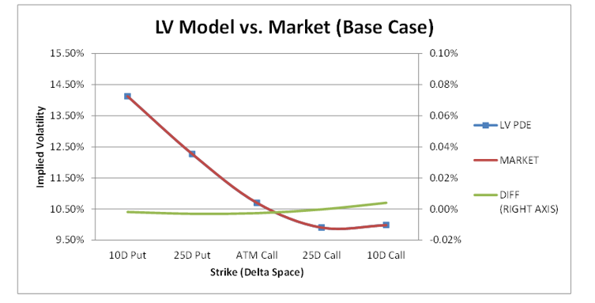
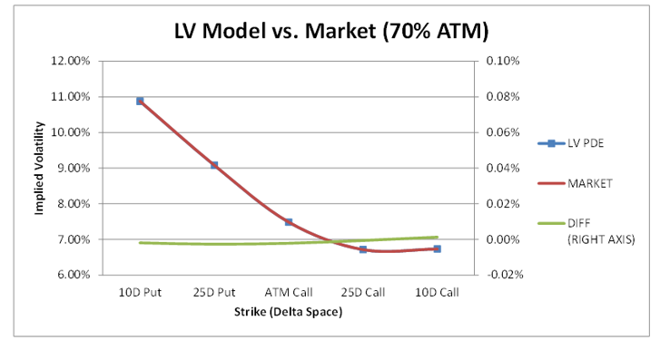
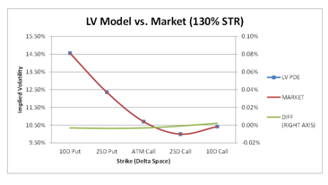
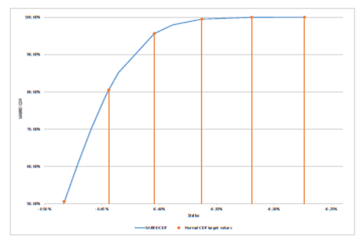
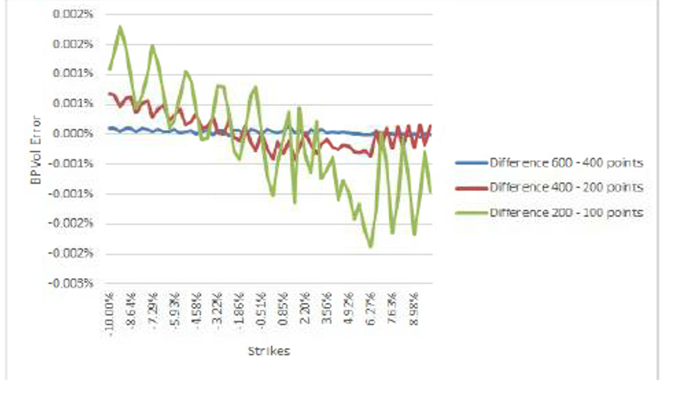
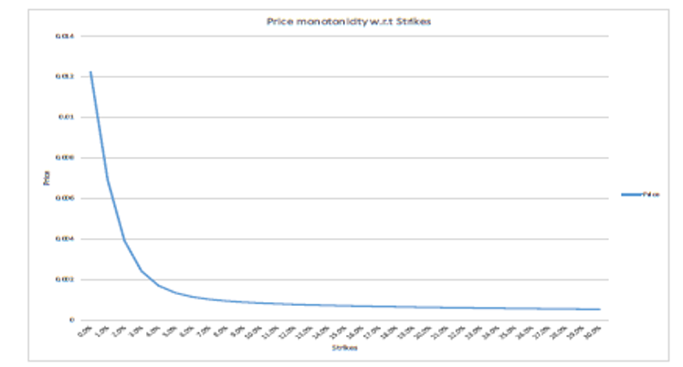

1.5.1. FX Analytic Volatility Surfaces#
1.5.1.1. Table of Contents#
5.1.2. At-the-money Time models
5.1.3.3.1 Local volatility impact and time arbitrage cleanup
8. Risk Assessment and Calculation (Model-Driven Payoff Analysis)
-
9. Comprehensive Testing and Outcome Analysis of the Payoff, Model, and Portfolio
9.1.5 ATM Time Interpolation: Variance Interpolation Backbone
9.3.1. Check that the ratio of bumped volatility are correct: FXVol Test 30
9.3.2. Recalculate manually Near/Far Rega/Sega Risk: FXVol Test 32
9.3.3. Check these risks calculated with Jacobian against risk with pure bumps: FXVol Test 33
9.3.4. Check volatility on a strike ladder for very large bumps of volatility quotes: FXVol Test 34
9.3.6. Bump ATM volatility until the smile model is not able to build: FXVol Test 36
1.5.1.2. 2. Executive Summary#
This document presents the model used for the construction of the FX volatility surfaces as marked by the FX Options desk and it is the main model developer document for GMD4181.
The FX volatility surface is used to capture market prices of FX vanilla options, and to provide via internal interpolations in time and strike the implied Black-Scholes volatility of vanilla options for arbitrary strike \( K \) and expiry \( T \), \( \Theta(K, T) \).
These implied volatilities are an input to all pricing models of FX option products (either vanilla or exotic) and therefore, the model presented here, is a feeder to all such models whether used for the pricing, or for intraday/end-of-day valuation of FX options books. Furthermore, the FX volatility surface is used for Value-at-Risk (VaR) calculation for those books and for the valuation of cross-currency option products from other (non-FX) asset classes.
Traditionally, the FX option market segmented itself into two separate sections, one being short-dated (\( T < 2 \) years) and the other long-dated. These two market segments tended to trade different products, catering to different market participants and with resulting different trading dynamics. As a result, different volatility marking methodologies and interpolations have been developed over time in order to cater to these differing requirements. So, while logically we talk about a FX volatility surface in practice, we currently have multiple variations being published and used.
This document describes in details the various features (for marking and interpolating) used by both market segments and then describes how they are composed into the actual volatility surfaces objects used by either the short or long dated desks.
The paper begins with a description of the volatility quotes and conventions that are commonly observed in the market and/or that are used to mark the volatility surface.
It then proceeds with a description of the smile models (3-point analytic quartic smile, 5-point analytic quartic smile and the degenerate flat analytic smile). These smile models are common to both the short and long dated surfaces.
This is then followed by the different at-the-money (ATM) backbone models and time interpolation schemes used, which are the features that mostly distinguish short-dated surfaces from long-dated ones.
We then proceed to present the effect of bumping on the volatility surface, which is used to compute sensitivity to volatility changes for the trade population.
And finally, we present tests to show that the FX Analytic Volatility Surface accurately implements the model as described. The tests are conducted using QALib version QA2439.00.
1.5.1.3. 3. Scope#
1.5.1.3.1. 3.1. Model Purpose and Intended Usage#
This document describes the model used for two flavours of FX volatility surfaces currently (Aug-2017) used in production, respectively by the short and long dated FX option desks:
FX Mean-Reverting (MR) volatility surface
FX Variance Interpolation (VI) volatility surface.
The two surface types have the same primary purpose: marking liquid vanilla option contracts as observed in the market and provide an interpolation object for the implied volatility of vanilla options not directly observed.
The model is used to query for implied volatility values in order to either price vanilla option trades of arbitrary strike and maturity or to provide the input target price for the calibration of more exotic models. See Section 5.7 for a list of feeder models.
The two surfaces differ in the market features they try to capture.
The MR surface usually extends to 3 years expiry and is primarily used to price vanilla options and first-generation exotics of short maturity. This market is particularly sensitive to short-term effects of events like either economic policy announcements from monetary authorities (e.g. FOMC meetings) or economic activity indicators (e.g. US Non-farm Payroll) or important political events (e.g. Brexit referendum of June 2016) that might affect the daily volatility of the currency pairs. The at-the-money model used for this surface (see Section 5.1.2.2) allows to capture these effects, while wing model (see Section 5.1.3.2) allows for interpolating wing call/put quotes in a manner that takes into account the non-smooth behaviour of the at-the-money volatility backbone.
The VI surface extends to 20 or 40 years, depending on the currency pair. The VI surface uses a smoother time interpolation (linear or cubic in variance, see Section 5.1.3.1) and does not contain information about economic events as this fine-grained structure of the at-the-money backbone is deemed not necessary for longer-dated products.
1.5.1.3.2. 3.2. Conceptual Soundness#
The Black-Scholes model is inadequate to price vanilla options of all strikes and maturities consistently with the market. It is therefore necessary to construct a volatility surface \( \Theta(K, T) \) which can provide a consistent price for vanilla options at arbitrary strike \( K \) and expiry \( T \), while matching the market instruments quoted.
This document describes smile models methodology (3-point analytic quartic smile, 5-point analytic quartic smile and the degenerate flat analytic smile) which allow to interpolate the volatility at any strike \( K \) while ensuring a match of the at-the-money, risk reversals and strangles which are marked by the market on 25 and 10 deltas.
Other approaches are possible, like using a smile interpolation polynomial in delta (like cubic spline) or a model based smile interpolation like SABR. The issue with simple polynomial interpolation is that there is no rational reasoning behind it, and it can lead to important smile arbitrage. Model based smile interpolation like SABR are arbitrage free but the shape produced are not flexible enough to fit the FX market instruments, especially on the 10 deltas.
The analytic quartic model have the strong feature that it is completely algebraic, thus making it easy to implement as well as very fast and this has been one of the main reason for the adoption of this model. Over time, as the 10-delta quotes have become more liquid and therefore more frequently observed, the need for a smile model that would easily and perfectly match 5 quotes has lead to the extension from 3-point to 5-point analytic model. The 5-point model retains the very desirable algebraic calibration feature but allows more control over the far wings.
Some other attempts to modify the 3-points were found to produce unsatisfactory or unstable behavior like adding a constant term in the drift of the stochastic implied model, see Section 5.1.1.1.3.
The time interpolation models described in this document apply to the ATM term-structure backbone and the wings. The main constraint of these models is to be able to match the market benchmark tenors and be able to query the volatility at any time while avoiding calendar arbitrage. The FX market is really liquid and the short-term option business requires a precise marking of the daily volatility. Indeed, some days with important business and economic events have more volatility whereas week-end and holidays have less. The approach of the Mean-Reverting ATM backbone using daily Event Weights allow for short-dated surfaces to fine tune the daily volatility and mark properly the days with events. On the long-dated one, this granularity on daily volatility is not necessary and the approach of time interpolation in variance (without events) is sufficiently accurate while extremely simple to mark and manage from day-to-day.
From a consistency standpoint, it would be certainly desirable to eventually converge to a single FX Volatility surface model for both the short and long-dated business, but this aspiration has to be balanced with the current business requirements of trying to best capture the minimum set of salient features appropriate for the market trades being traded.
1.5.1.4. 4. Product / Payoff / Portfolio#
This section outlines fundamental FX conventions and various FX option products.
The products discussed here are essential because their prices, expressed through implied Black-Scholes volatilities, serve as inputs for the FX volatility surface model. The descriptions provided are sufficient to interpret market quotes and populate the internal state of the FX volatility object. This section does not aim to be a comprehensive guide to booked trades of similar types; separate documents will cover those products for pricing purposes.
1.5.1.4.1. 4.1. Standard FX Definitions and Conventions#
1.5.1.4.1.1. 4.1.1. Currency Pair FORDOM#
A currency pair consists of two currencies linked by a spot rate \( S \). The spot rate \( S \) represents the value of one unit of foreign currency (FOR) in terms of the domestic currency (DOM).
The standard convention for displaying spot rates on platforms like Reuters is FORDOM, such as USDJPY. Here, the domestic currency is JPY, and the foreign currency is USD. The spot rate indicates the value of 1 USD in JPY terms. For GBPUSD (Cable), the domestic currency is USD, and the foreign currency is GBP. Calls and puts refer to the foreign currency, so a USDJPY call is an option to buy USD and sell JPY at a predetermined strike.
1.5.1.4.1.2. 4.1.2. At-the-Money#
The at-the-money (ATM) strike can be defined in three ways:
ATM spot: The ATM strike is todays spot FX rate.
ATM forward: The ATM strike is todays observed forward rate for the maturity.
ATM zero-delta-straddle (ZDS): The strike is set such that the straddle has zero delta.
The definition of ATM ZDS depends on the interpretation of delta, which can be:
Spot delta: The amount of spot FX required to delta-hedge the FX option.
Forward delta: The amount of forward FX contracts needed to delta-hedge the FX option.
Additionally, two currencies must be specified:
Premium currency: The currency in which the FX option is valued. For example, a USD call-JPY put is a call option on the USDJPY FX rate, typically valued in yen, but it can also be valued in dollars. Also known as the booking currency.
Face currency: The currency in which the notional amount of the FX option is expressed. For instance, a USDJPY option is usually specified in USD notional but can also be expressed in JPY notional.
The choice of premium and face currency affects the definition of delta.
1.5.1.4.2. 4.2. Description#
1.5.1.4.2.1. 4.2.1. Call/Put#
The basic option products are vanilla call and put options.
The payoff for call and put options with expiry \( T \), strike \( K \), and notional \( A \) is:
This payoff is settled at time \( T \) (or shortly after, following FX market conventions).
When quoting the price of a call or put option, market convention specifies the volatility value \( \Theta(K,T) \) that, when plugged into the Black-Scholes formula, yields the options present value (PV). For example:
where \( C(\cdot) \) represents the Black-Scholes formula for a call option (see Equation 4.11).
Call and put prices (or volatilities) are not directly observed in the FX option market. Instead, these options are used to define more liquid instruments like Risk Reversals and Strangles, described below. Liquid instruments are typically quoted for a given delta rather than a fixed strike \( K \). See Section 4.7.2 for a detailed explanation of delta in FX options.
1.5.1.4.2.2. 4.2.2. Risk Reversal#
A Risk Reversal (RR) is a key FX trading strategy involving a long call and a short put. In FX, the call and put are selected to match a specific delta (in absolute terms).
In the FX market, the risk reversal is quoted as the difference between the Black-Scholes implied volatility of the call and that of the put. For example, the 25-delta risk reversal is:
1.5.1.4.2.3. 4.2.3. Strangle#
A Strangle (ST), also known as a butterfly or fly, is a strategy where one is long both a call and a put. In FX, the call and put are chosen to have the same delta.
The FX market quotes strangles in two ways:
Theoretical strangle: The average of the call and put volatilities minus the ATM volatility:
\[ \sigma_{25}^{ST-Th} = \frac{1}{2}(\sigma_{25\Delta}^{Call} + \sigma_{25\Delta}^{Put}) - \sigma_{ATM} \tag{4.7} \]Market strangle: The volatility adjustment needed on top of the ATM volatility to match the market cash value of the strangle:
\[ C(K_{25\Delta}, \sigma_{ATM} + \sigma_{25}^{ST-Mkt}) + P(K_{25\Delta}, \sigma_{ATM} + \sigma_{25}^{ST-Mkt}) = C(K_{25\Delta}, \sigma_{25\Delta}^{Call}) + P(K_{25\Delta}, \sigma_{25\Delta}^{Put}) \tag{4.8} \]
The theoretical strangle is a first-order approximation to the market strangle. Both definitions depend on the interpretation of at-the-money. The difference between them is usually small for expiries under 1 year but can become significant for longer maturities.
1.5.1.4.2.4. 4.2.4. Straddle#
A straddle involves being long both a call and a put at the same strike. In FX, the straddle is used to find a structure with zero delta, known as the Zero-Delta-Straddle (ZDS). See Section 4.7.3 for details on the ZDS at-the-money strike.
1.5.1.4.3. 4.3. Creation of the Volatility Surface#
FX volatility surfaces are constructed using volatility quotes against delta.
For each tenor \( T \), the volatility surface is typically specified using the following liquidly observed options:
At-the-money option
25-delta RR
25-delta ST
10-delta RR
10-delta ST
The term 25-delta means the delta hedge is 25% of the notional in absolute terms.
From the RR and ST quotes, the 25-delta put and call volatilities can be deduced, and from there, the corresponding strikes. Care must be taken when interpreting delta, as it varies depending on the valuation currency.
1.5.1.4.4. 4.4. Relationship to Other Approved Models / Payoffs#
N/A
1.5.1.4.5. 4.5. Inputs#
This section outlines the inputs required to specify the instruments used for constructing the volatility surface, including at-the-money volatility, strangle, and risk reversal. Acceptable values are provided.
1.5.1.4.5.1. 4.5.1. At-the-Money Volatility#
Input Name |
Description |
Values |
|---|---|---|
ATM style |
At-the-money convention (see 4.1.2) |
ATM Zero delta straddle, ATM Forward, ATM Spot |
Booking currency |
Premium amount convention (see 4.1.2) |
Domestic, Foreign |
Face currency |
Face amount convention (see 4.1.2) |
Domestic, Foreign |
Maturity reference date |
Reference date to compute time to expiry |
Date |
Maturity date |
Expiry date of the instrument |
Date |
Observed level |
Market value of the instrument:\( \sigma_{ATM} \) |
Double |
1.5.1.4.5.2. 4.5.2. Strangle#
Input Name |
Description |
Values |
|---|---|---|
Strangle style |
Strangle convention (see 4.2.3) |
Theoretical strangle, Market strangle |
Booking currency |
Premium amount convention (see 4.1.2) |
Domestic, Foreign |
Face currency |
Face amount convention (see 4.1.2) |
Domestic, Foreign |
Delta type |
Delta convention (see 4.1.2) |
Spot delta, Forward delta |
Maturity reference date |
Reference date to compute time to expiry |
Date |
Maturity date |
Expiry date of the instrument |
Date |
Delta level |
Delta level of the instrument |
0.25 or 0.10 (usually) |
Observed level |
Market value of the instrument:\( \sigma_{25}^{ST} \) and \( \sigma_{10}^{ST} \) |
Double |
1.5.1.4.5.3. 4.5.3. Risk Reversal#
Input Name |
Description |
Values |
|---|---|---|
Booking currency |
Premium amount convention (see 4.1.2) |
Domestic, Foreign |
Face currency |
Face amount convention (see 4.1.2) |
Domestic, Foreign |
Delta type |
Delta convention (see 4.1.2) |
Spot delta, Forward delta |
Maturity reference date |
Reference date to compute time to expiry |
Date |
Maturity date |
Expiry date of the instrument |
Date |
Delta level |
Delta level of the instrument |
0.25 or 0.10 (usually) |
Observed level |
Market value of the instrument:\( \sigma_{25}^{RR} \) and \( \sigma_{10}^{RR} \) |
Double |
1.5.1.4.6. 4.7. Payoff Analysis#
This section derives formulae to relate the delta of an input volatility quote to a corresponding strike, based on the conventions associated with the quote. These formulae are not used for direct pricing but for calibrating smile models (see Section 7, particularly Sections 7.1.1 and 7.1.2).
1.5.1.4.7. 4.7.1. The Effect of Changing Booking Currency on Risk Measures#
A key difference between FX and other asset classes (e.g., equities) is that deals can be valued in either the domestic or foreign currency. This affects the price and sensitivities (Greeks), but simple formulae relate the two sets of results. For example, a JPY price of a derivative is the product of the USD price and the USDJPY spot rate. This impacts the creation of a volatility surface, as discussed later.
We detail the calculation of delta when booking in the foreign currency. Let \( P \) be the price of a derivative when booking in the domestic currency. Assuming deterministic interest rates, booking in the foreign currency yields a price of \( P^* = P / S = S^* P \) in foreign units, where \( 1 / S = S^* \). The delta when booking in the foreign currency is the PV move in foreign currency \( \delta P^* \) for an infinitesimal move \( \delta S \) of the spot \( S \), expressed in foreign currency. Thus:
Simplifying and expressing in terms of derivatives:
1.5.1.4.8. 4.7.2. The Meaning of Delta for Volatility Surfaces#
Given a volatility and delta for an option, the strike can be calculated. The calculation depends on whether the delta is calculated in the domestic or foreign currency and whether the delta is expressed as a percentage of the domestic or foreign notional.
For example, valuing vanilla deals in the domestic currency with a notional of \( A \) foreign units yields a price of:
in DOM units, where:
\( r_d \): Continuous domestic interest rate
\( r_f \): Continuous foreign interest rate
\( t \): Time to maturity
\( K \): Strike
\( \phi \): 1 for a call on the foreign principal, -1 for a put on the foreign principal
and:
where \( N(\cdot) \) is the standard cumulative normal distribution function.
The delta is:
in FOR units.
For a 25-delta call, the strike \( K_C \) satisfies:
Similarly, the 25-delta put strike \( K_P \) satisfies:
These equations can be inverted to find the strikes.
When valuing deals in the foreign currency, the delta is:
For a 25-delta call strike:
A root-finding algorithm, such as Newton-Raphson, is used to solve this equation:
until convergence.
When specifying the volatility surface for a currency pair, its important to note the booking (premium) currency and the face (notional) currency.
1.5.1.4.9. Delta/Strike Relationships by Currency Configuration#
Booking currency |
Face Currency |
Delta/Strike relationship |
|---|---|---|
Domestic |
Foreign |
\(\Delta = \phi e^{-r_f t}N(\phi d_1)\) |
Foreign |
Foreign |
\(\Delta = \phi\frac{K}{S}e^{-r_d t}N(\phi d_2)\) |
Domestic |
Domestic |
\(\Delta = \phi\frac{S}{K}e^{-r_f t}N(\phi d_1)\) |
Foreign |
Domestic |
\(\Delta = \phi e^{-r_d t}N(\phi d_2)\) |
1.5.1.4.10. Example Conversions#
For the case when both booking and face currency are domestic with domestic currency amount B:
Using the above means that the delta in foreign units is:
Recalling that delta is expressed as a percentage of the notional:
Spot-converting the delta to express it in domestic currency:
1.5.1.4.11. Practical Example#
In USD/JPY, option contracts are priced in USD terms and notionals are quoted in USD terms too, so the second equation in the table would be used.
1.5.1.4.12. 4.7.3. The ZDS At-the-Money Strike#
The ATM point can be defined as the strike where a straddle has zero delta. A straddle involves being long a call and a put at the same strike. When the booking currency is domestic and the notional is in foreign terms, the straddle delta is:
This is zero if \( d_1 = 0 \), implying:
Solving for the ATM strike:
The ATM delta is:
When the booking and face currencies are foreign, the straddle delta is:
This is zero if \( d_2 = 0 \), implying:
Solving for the ATM strike:
The ATM delta is:
These results are summarized in Table 4.1.
Table 4.1: ZDS Conventions
Booking Currency |
Face Currency |
ATM Strike |
ATM Delta |
|---|---|---|---|
Domestic |
Foreign |
\( S \exp((r_d - r_f + 0.5 \sigma_{ATM}^2) t) \) |
\( \exp(-r_f t) \cdot 0.5 \) |
Foreign |
Foreign |
\( S \exp((r_d - r_f - 0.5 \sigma_{ATM}^2) t) \) |
\( \exp(-(r_f + 0.5 \sigma_{ATM}^2) t) \cdot 0.5 \) |
Domestic |
Domestic |
\( S \exp((r_d - r_f + 0.5 \sigma_{ATM}^2) t) \) |
\( \exp(-(r_d + 0.5 \sigma_{ATM}^2) t) \cdot 0.5 \) |
Foreign |
Domestic |
\( S \exp((r_d - r_f - 0.5 \sigma_{ATM}^2) t) \) |
\( \exp(-r_d t) \cdot 0.5 \) |
1.5.1.5. 5. Model / Methodology#
1.5.1.5.1. 5.1. Description#
This section provides a detailed explanation of the fundamental components of FX volatility surfaces. The volatility surface, represented as a 2-dimensional interpolator \( \Theta(K, T) \), consists of two key elements:
Smile Model: Determines the volatility for any strike \( K \) at a fixed time to expiry \( T \). This is discussed in Section 5.1.1 and is common to both short-dated and long-dated surfaces.
Time Model: Determines how, after calibrating the smile model for a set of marked tenors \( T_i \), a smile is constructed for a maturity \( T \) not included in the set of marked tenors. The general approach is to interpolate in time either 3 or 5 quotes (ATM plus 25/10-delta, depending on the smile model) and then construct a smile model for the given expiry \( T \). ATM time interpolation is typically handled differently from wing quotes. Sections 5.1.2 and 5.1.3 describe the time interpolation for ATM and wing volatilities, respectively.
Short-dated and long-dated surfaces differ primarily in the time models used.
1.5.1.5.1.1. 5.1.1. Smile Models#
Smile models are defined by the number of input points (1, 3, or 5) and the underlying analytic model. Five models are commonly used:
Flat Analytic (Single Point Model): Assumes a flat volatility smile, ignoring any specified smile quotes (e.g., RR and ST). This is useful for pricing without considering the smile effect.
3-Point Analytic Quartic Smile Model: Calibrated to ATM and 25-delta quotes. It provides a robust benchmark for risk calculations like VaR.
5-Point Analytic Quartic Smile Model: Calibrated to ATM, 25-delta, and 10-delta quotes. It offers better control over the wings.
3-Point ASV Model: A 3-point model based on the Analytic Stochastic Volatility (ASV) framework.
5-Point ASV Model: A 5-point model based on the ASV framework.
These models can be categorized into two main classes:
Analytic Quartic Smile Model: Based on Schnbuchers stochastic implied volatility model, providing fast, analytic solutions for FX volatility smiles.
ASV Model: Based on the Analytic Stochastic Volatility framework, offering a more flexible approach to modeling the volatility smile.
The Flat Analytic model assumes a flat volatility smile and ignores any specified smile quotes. It is internally implemented as a fully-fledged smile model, but the volatility for any strike \( K \) is set equal to the ATM volatility.
A 3-point model (Analytic Quartic or ASV) is calibrated to ATM and 25-delta quotes. While simplistic, it provides a robust benchmark for risk calculations like VaR and serves as a fallback model for numerical investigations.
A 5-point model is calibrated to ATM, 25-delta, and 10-delta quotes, offering better control over the wings.
1.5.1.5.1.1.1. 5.1.1.1. Analytic Quartic Smile Model#
This section begins with an overview of Schnbuchers stochastic implied volatility model, followed by a description of the 3-Point Analytic Quartic Smile Model and the 5-Point Analytic Quartic Smile Model, which provides additional degrees of freedom for better fitting extreme wing strikes.
1.5.1.5.1.1.2. 5.1.1.1.1. Stochastic Implied Volatility Model for a Single Volatility#
In this section we describe the salient features of the Schnbucher paper. The essence of the modelling approach is in the same spirit as that of Brace, Gatarek, and Musiela [2], that is a market-based approach rather than modelling fundamental quantities like instantaneous volatility.
Assume a locally log-normal stochastic process for spot in the risk neutral measure.
Here the instantaneous spot volatility \(\sigma\) is assumed to be stochastic and follows some unspecified process. However, we shall assume that is depends on the Brownian motion \(W\) and a second uncorrelated Brownian motion \(W'\).
Consider the implied volatility of a European option with strike \(K\), \(\Theta(K)\). As observed from the market this implied vol will appear to be stochastic. In principle, we can derive its process from the processes for \(S\) and \(\sigma\) using It.
Schnbuchers idea is to turn this argument around and instead, write down a form for the risk-neutral process for \(\Theta(K)\) directly, from which the process for \(\sigma\) can in principle be inferred.
Note that the implied correlation \(p\) is in general a function of \(S\) and \(K\). The process (5.2) can be thought of as the result of some sort of two factor principle component analysis of the motion of the implied volatility smile.
The price of a call option \(C(K, S, \Theta)\) is by definition written directly in terms of the spot \(S\) and implied volatility \(\Theta(K)\) using the BlackScholes formula. Using the dynamics of the implied volatility and the spot, Its lemma gives
For the absence of arbitrage, we need the discounted option price to be martingale under the risk-neutral measure associated with the premium currency numraire. This is equivalent to
Applying this to Equation (5.3) yields the following two dimensional PDE:
The BlackScholes equation for \(C\) is
Using the above equation we can simplify further to give
The BlackScholes expressions for the derivatives are:
Inserting these and simplifying gives
This is our fundamental equation. Note that this equation is algebraic. Equation (5.7) defines the smile \(\Theta(K)\) given \(S\) and \(\sigma\) and a functional form for \(u, v\), and \(p\). The problem is that we do not know what these functional forms are. In this approach we have to posit a reasonable form for these functionals and then judge the validity of these choices by comparing the resulting smile shapes to the observed market.
Schnbucher analyses the behaviour of Equation (5.7) in the limit as \(t \to 0\). It turns out that if the implied volatility of a given strike is different to the instantaneous volatility, then the implied volatility will have a singularity as \(t \to 0\) unless the restriction \(u \to 0\) as \(t \to 0\) is imposed.
The next two sections describe how different choices of \(u\) and \(v\) are used to match the 3 and 5 points.
1.5.1.5.2. 5.1.1.1.2 3-Point Analytic Quartic smile model#
A very simple choice is to set \(u = 0\) and \(v, p\) to be constant. We therefore have three constant unknowns in Equation (5.7), namely \(\sigma, v, p\). These can be thought of as the spot volatility, the vol-of-vol and a measure of the spot-volatility correlation. As such they are largely independent
With the above points in mind we have found that functions of the form
and
are useful. At small \(f\) they have \(f^2\) and \(f\) character but become constant for very large \(f\). The constant \(\gamma_B\) is called the scale factor B, and need to be chosen ad-hoc, we do not wish to fit it to market quotes as that would give us too many parameters. The scaling with the at-the-money-variance appears to be a good scale. Indeed, when the at-the-money variance is large, the wings are usually dampened, and the convexity reduced. When the at-the-money variance is small the opposite behavior can be observed and the wings are more pronounced.
Empirically the 10/25 delta risk reversal problem was best fixed by making
Here \(\beta\) is the new parameter. This leads to a modification of the \(\Theta^3\) term in the smile equation. The constant \(\gamma_B\) is presently set to 49 in QALib. In fact, the actual choice of this parameter is not very important and affects only the extreme wing as can be seen in the following graphs plotted on EURIPY MeanRevertingNykOpen volatility surface of 1st December 2016. moniker : official@20161201/volsurface.fx/pivot/euripy/MeanRevertingNykOpen/builder

Figure 5.1: Impact of the ATM scale factor B \(\gamma_B\) on EURIPY volatility surface, 6M expiry: 01 June 2017. We can see that the scale factor has only an impact on extreme wings of the smile, and this impact is fairly limited: for value of 100 to 20 we have almost same wings.

Figure 5.2: Impact of the ATM scale factor B \(\gamma_B\) on EURIPY volatility surface, 2 Business day expiry: 05 Dec 2016. We can see that the scale factor has almost no impact on the wings, apart for a very low value of 8.
The main reason to choose this big value for \(\gamma_B\) of around 50 lies in the resolution of the five linear equations we have with the calibration of the 5-points quartic model. This is basically a system of five linear equations and five unknowns, resolved building the coefficients matrix and performing a singular matrix decomposition. What we want to avoid is to have the determinant of the coefficients matrix equal to zero, because otherwise this system cannot be solved.
Plotting some value of the determinant of the coefficients matrix for different time to expiry, we can see that the value where it crosses zero is higher for lower time to expiry query. We see that for a value of \(\gamma_B = 49\) the determinant does not cross zero and we have a good buffer from having this issue.

Figure 5.3: Impact of \(\gamma_B\) on the coefficients matrix determinant of the quartic. We plot the graphs of the determinant for the 1D maturity
Figure 5.4: Impact of \(\gamma_B\) on the coefficients matrix determinant of the quartic. We plot the graphs of the determinant for the 5M maturity
For a short query, the value where the determinant crosses zero is higher than for longer query. We can see that on all the graphs, the determinant crosses zero with value much lower than 49.
An intuitive understanding is by considering Equation (7.6). In order to have several positive solutions with the polynomial having a W shape crossing the x- axis for small time to expiry t, one needs a
big \(\gamma_B \times Cross\theta\). Indeed, if we neglect the term \(\Theta^3 (Cross \times t)\) assuming a short expiry, one needs an extreme value for the Cross term. \(\gamma_B\) shares some similarities with the Cross term as they both effect the skew of the smile shape. When, \(\gamma_B\) is small, the term
becomes larger and can give rise to several positive solutions.
The turn up in the smile in the wings was best dealt with by modifying the vol-of-vol part \(v^2\) to give it the following functional form.
Here \(\alpha\) is a new parameter.
In the following graphs on the same EURIPY MeanRevertingNykOpen volatility surface of 1st December 2016, we plot the influence of \(\gamma_A\). moniker : official@20161201/volsurface.fx/pivot/euripy/MeanRevertingNykOpen/builder

Figure 5.5: Impact of the ATM scale factor A \(\gamma_A\) on EURIPY volatility surface, 6 M expiry: 01 June 2017. We can see that the scale factor has only an impact on extreme wings of the smile, and this impact is fairly limited.

Figure 5.6: Impact of the ATM scale factor A \(\gamma_A\) on EURIPY volatility surface, 2 Business day expiry: 05 Dec 2016. We can see that the scale factor has only impact on the extreme wings of the smile, and this impact is fairly limited.
With the new assumptions, Equation (5.7) becomes:
Note the appearance of both \(v\) and \(v_0\). This is deliberate as we dont want to change the parameter \(p\sigma v_0\), corresponding to the ATM point. We call this term the Cross and it is a measure of the spot-volatility covariance. The smile equation then becomes:
This is still a quartic equation for \(\Theta\) but now all but the quadratic coefficient has a strike dependence. The form is still simple enough so as not to incur a speed penalty.
For given at-the-money and 25 delta points, there is a range of acceptable 10 deltas that we can fit. This is reasonable as a given arbitrary smile may not be compatible with a stochastic model or even no-arbitrage.
We will detail in the calibration section, see Section 7.1, how this 5-point quartic model is calibrated in order to match the input volatility quotes.
See Section 5.8 for some alternative approaches that were attempted in the specification of the 5-point quartic analytic smile model but that were deemed unsatisfactory.
Effect of quartic five point parameters
In this section we show graphically the effect of the various parameters used to define the model. Each graph displays a base value smile, as well as the smiles resulting from bumping up and bumping down one parameter at a time. On the right y-axis we graph the difference between the bumped smiles and the base case, to visualize the impact of the parameters bumps. We use the following surface. The moniker used for these tests is : official@20161201/volsurface.fx/pivot/eurusd/meanrevertingfiveparms/builder
Figure 5.7: Effect of the spot var parameter \(\sigma^2\). We see that the spot var parameter determines the level of the ATM implied volatility of the smile. A change of this parameters results in a parallel shift of the volatility smile. The difference curves are as expected parallel for the plus and minus move.

Figure 5.8: Effect of the var of implied vol parameter \(v_0\). This term can been seen as the vol of vol squared of standard stochastic-volatility. So as expected, an increase of this parameter increases the convexity of the wings of the smile, and a decrease flattens the wings. You can see the changes are applied to the wings looking at the difference plot and the impact is greater the more you are out in the wings.
Figure 5.9: Effect of the spot vol-implied vol covariance, Cross parameter \(p\sigma v_0\). This parameter we call Cross determines the covariance between spot and volatility, it would be similar to correlation effect in standard stochastic-volatility model. So, as expected, this parameter influences the skew of the volatility smile. If we increase the Cross, it implies an increase of the skew slope, and if we decrease the Cross, it implies a decrease of the skew slope.

Figure 5.10: Effect of the parameter \(\alpha\). This parameter is supposed to capture the convexity of the smile for the far strikes only, so that it calibrates the far wing smile part (10 deltas ST). We can see on the graph, that the behavior is as expected: an increase of alpha increases the convexity on the far wings (Abs. diff. up graph) and a decreased alpha parameter decreases the convexity of the smile on the far wing only (Abs. diff. down graph). The fact that it affects the far wings only is quite clear when we look at the difference graphs which is equal to almost zero between 0.2 and 0.8 deltas.
Figure 5.11: Effect of the parameter \(\beta\). This parameter is supposed to capture the skew of the smile for the very far strike from the money only, so that it calibrates the far wing skew RR part (10 deltas RR). We can see on the graph, that the behavior is as expected: an increase of beta increase the skew mainly on the far wings (Abs. diff. up graph) and a decreased beta parameter decreases the skew of the smile on the far wing mainly(Abs. diff. down graph). The fact that it affect the far wings only is quite clear when we look at the diff plot which is very low between 0.2 and 0.8 deltas.
1.5.1.5.3. 5.1.1.1.4 Low-fly correction extension to the Analytic Quartic models#
As it will be discussed in Section 7.1.1.1, the calibration of the quartic parameters can be quite problematic when the smile term is negative as this leads frequently to a failure because you may have no positve real solution. Also in the quartic parameters calibration stage it is not sure that the implied vol corresponds all the time to the largest solution of the polynomial.
In this section we present an extension of the quartic model that ensures the ability to always find an implied volatility, even in the case of low strangle quotes (hence the name low-fly correction). This usually occur for some emerging market volatility surfaces, or smile in the vicinity of big events (e.g. French elections).
3-point Analytic Quartic model
To remediate the issue we can amend the 3-point quartic polynomial to become:
where
We can see if the smile is positive we end up having \(\hat{\Theta} = \Theta\)
We can really see that in that case the real positive solution is unique for \(\Theta\) and \(\hat{\Theta}\) if the smile is negative
\(\hat{\Theta}\) is actually the ATM forward implied volatility
In the case of negative smile we can see that we end up solving quadratic equation:
Where:
We then define new cross term:
We can finally express the implied volatility in term of the new cross since we have reduced the problem to a second order equation:
The main interest of this new representation is that it allows to generate concave smile. Otherwise, the parametrization with \(smile > 0\) cannot fit this type of smile.
Below we show some example of parametrization which generate concave smile vol, with a negative smile term:
t |
0.002739726 |
|---|---|
cross |
-4% |
smile |
-60% |
sigma |
25% |

Figure 5.12: Shape of a concave smile generated using negative smile term for the quartic. The x axis represents \(\ln(\frac{F}{K})\) and the y axis the volatility
5-point Analytic Quartic model
The same analysis and technique done for the 3-point quartic can be used for 5-point quartic polynomial.
The smile shape is a sum of two parts:
ATM smile part \(v_0^2\) which can be seen as variance volatility and capture smile effect on all strikes
One capturing the convexity for far strikes only so it calibrates the far wings smile part: \(\frac{f^2}{V_{ATM}+f^2}\)
The far wing is more important for low ATM vol. It is an even function to control the left and right wings in the same way.
The skew is also a sum of two parts:
One Part detecting the skew very close to ATM strikes called Cross, \(p\sigma v_0\)
One detecting the skew very far from the money. It is an odd function: \(Cross_{5pts} = Cross + \frac{f}{\sqrt{\gamma_B V_{ATM}+f^2}}\)
The way we treat the resolution of the quartic equation is this way:
If \(smile < 0\) we go to the new polynomial
If \(\alpha < 0\) and \(smile + \alpha < 0\) we go to the new polynomial even if the smile is positive
We can write formally this condition as:
The new 5 pts quartic polynomial is given by:
This can be rewritten as:
Where:
If \(Cond = 0\) we can see that \(\hat{\Theta} = \Theta\). However if the \(Cond = 1\) is negative we have to solve the equation:
That gives:
Then knowing \(\hat{\Theta}\) we end up solving:
So we have the solution:
The new representation allows to generate a concave smile while maintaining the flexibility to mark and match the far wings quotes as the original 5-points analytic quartic model.
Below we show some example of parametrization which generate concave smile volatility, with a negative smile term:
Beta Impact:
t |
0.002739726 |
|---|---|
cross |
-10% |
smile |
-60% |
sigma |
25% |
beta |
0 or 10 or 20 |
alpha |
0% |

Figure 5.13: Shape of a concave smile generated using negative smile term for the quartic 5 pts. The x axis represents ln(\(\frac{F}{K}\)) and the y axis the volatility. The ATM level is 25% and we can see that the impact of Beta is on the far wings. The skew is impacted far away from the money.
Alpha Impact:
t |
0.002739726 |
|---|---|
cross |
-10% |
smile |
-60% |
sigma |
25% |
beta |
0 |
alpha |
0, -0.1, -0.2, -0.3 |

Figure 5.14: Shape of a concave smile generated using negative smile term for the quartic 5 pts. The x axis represents ln(F/K) and the y axis the volatility. We can see that the smile around the money is almost the same however it is more concave far way from the money and it is more concave when alpha is lower.
1.5.1.6. 5.1.1.1.5 Skew, curvature and skew curvature in 3/5 PT analytic models#
This section details the calculations for the first (skew), second (curvature) and third (skew curvature) derivatives of the implied volatility for a given tenor as a function of the log of the strike, ln(K). These derivatives, specially the skew and the curvature, are important for several reasons: they are used to compute the PDF of the vol surface, to price digitals with on-smile and so forth
We will distinguish two cases, the 3 point analytic quartic equation, given by Equation (5.8), and the 5 point smooth analytic quartic equation, given in Equation (5.11). The definitions of this three derivatives are
skew = K = \(\frac{d\Theta}{d\ln(K)}\) (5.31)
curvature = KK = \(\frac{d^2\Theta}{d\ln^2(K)}\) (5.32)
skew curvature = KKK = \(\frac{d^3\Theta}{d\ln^3(K)}\) (5.33)
From now on, we will use the notation \(X_a = dX/da\). In both quartic equations, the only quantities that depend on the strike K are the implied vol itself, , and the quantity \(f = ln(F/K)\). Therefore, we can find K, KK and KKK by computing the derivatives of the quartic equation Q with respect to ln(K) (the superscript \(X^p\) denotes partial derivative)
Since by construction the quartic equation is equal to 0 regardless of the strike, we get that \(Q_K = Q_{KK} = Q_{KKK} = 0\), from which we obtain
The only thing remaining is to compute the unknowns in the above equations. This will be different for 3PT and 5PT. We have \(f = \ln(F/K)\), so that \(f_K = -1\) and \(f_{KK} = f_{KKK} = 0\). Partial derivatives of \(Q\) are easily obtained from Equations (5.8) and (5.11). Other quantities of interest are
In the above expressions we have assumed that the partial derivatives are commutative.
1.5.1.6.1. 5.1.1.1.6 Quartic model in the case of Foreign booking currency#
Contracts with foreign booking currency are priced in foreign risk-neutral measure. The choice of the risk-neutral measure to price the contract affects the quartic equation only in the cubic coefficient. Further we discuss the steps to derive the quartic equation using foreign risk-neutral measure.
Consider the inverse spot:
and assume the inverse spot follows log-normal process in the foreign risk neutral measure
This specification for the inverse spot process is consistent with the dynamics of spot process (5.1). Particularly, both spot and inverse spot have the same instantaneous volatility \(\sigma\).
Next, let \(K\) be the strike of European option expressed in units of foreign currency per 1 unit of domestic currency. The implied volatility \(\Theta(K)\) is a stochastic process which follows in the foreign risk-neutral measure:
Note that BlackScholes formula implies that \(\Theta(\hat{K}) = \Theta(K)\) where \(\hat{K} = K^{-1}\) and \(\Theta(K)\) is the implied volatility of vanilla European option with DOM booking currency and follows Equation (5.2). In terms of specifications for the implied volatility (5.2) and (5.46) it means that:
Next we refer to the implied volatility as simply \(\Theta(K)\).
The FOR price of a call option \(C(K, S, \Theta)\) on 1 unit of DOM currency satisfies:
Due to the absence of arbitrage
Applying this to Equation (5.47) yields the following two dimensional PDE:
The BlackScholes equation for C is
Plugging the above equation in (5.48) gives
The Black-Scholes expressions for the derivatives are:
Inserting these and simplifying gives
Up to this stage the derivation of quartic equation in FOR measure was very similar to the derivation of equation in DOM measure described in Section 5.1.1.1.3. As a result, the smile Equations (5.7) and (5.51) are identical with respect to the pricing measure.
The coefficients \(\hat{d}_1\) and \(\hat{d}_2\) can be expressed in terms of \(d_1\) and \(d_2\) used in BlackScholes formula with DOM booking currency
The smile Equation (5.51) rewritten in terms of domestic booking parameters takes the form
The three point smile equation corresponds to the case when \(u = -v\sigma\) and constant \(v, \rho\):
For the five point smile we take \(f = \ln\frac{F}{K} = \ln\frac{F}{K} = -f\) and re-use the original specification for \(u\) and \(v\):
The five point smile equation takes the form
Comparing Equations (5.53) and (5.54) to the original quartic equations (5.8) and (5.11) we can notice that the cubic coefficient changes sign when the booking currency is changed to FOR. For the five point smile \(\bar{a}\) was chosen to match it completely, causing \(\beta\) to change the sign inside the cubic coefficient to compensate the change of the coefficients sign. For the three point smile the setting which assumes zero drift for the implied volatility process in the foreign risk-neutral measure leaves the process with non-zero drift \(u = -v\sigma\) in domestic risk-neutral measure. In case of five point smile the drift in the domestic risk-neutral measure takes the form:
1.5.1.7. 5.1.1.2. ASV model#
The ASV models are parametric smile models inspired by the SVI parameterization which is very popular. While parametric the SVI is not arbitrary in the sense that the large-maturity limit of the Heston implied volatility smile is exactly SVI. Gatheral and Jacquier [6] reduced this model to a 3-parameters to guarantee the absence of static arbitrage. Their smile has the following parameterization:
where \(k = \ln(K/F)\) and F the forward
We can rewrite it as:
It was the starting point in the development of the ASV model.
1.5.1.7.1. 5.1.1.2.1 3-points ASV model#
The original 3-points ASV model relies on the following quadratic equation:
where here \(z = \frac{\ln(K/K_{ATM})}{\sigma_0\sqrt{t}}\) and \(K_{ATM}\) the ATM strike.
\(z\) is a natural variable as the smile usually scales in standardized moneyness, ie FX market quotes in delta space rather than in strike space.
We can see that the model is actually a reparametrization of Gatheral and Jacquiers SVI model.
As this form could only support positive smile, we added an adjustment for negative smile:
with
If the smile parameter is positive, \(\sigma\) and \(\tilde{\sigma}\) are equal. This adjustment guarantees that the equation always has a solution.
In this parameterization, all parameters have a clear meaning and are largely independent:
\(\sigma_0\) is the ATM volatility \(\sigma_0 = \sigma(0)\)
skew is the ATM skew \(skew = \frac{d\sigma}{dz}|_{z=0}\)
smile is a proxy to the ATM smile \(smile = \frac{d^2\sigma}{dz^2}|_{z=0} + \frac{(skew)^2}{\sigma_0}\)
1.5.1.7.2. 5.1.1.2.2 5-points ASV model#
As in the analytic quartic model, we want to control the wings (10-Delta quotes). We define an extra parameter for each wing: \(wing(z) = 1_{z<0}Put + 1_{z>0}Call\)
The model now relies on the following equation:
where
The second equation is to guarantee that we always have a solution to the first equation. Without that, when the wing parameter (Call or Put) is negative, the wing correction for out-the-money strikes will make the volatility collapse to 0.
This form gives us an easy-to-solve and continuous function.
Call and put parameters allows to control each wing separately.
1.5.1.7.2.1. Effect of ASV five point parameters#
In this section we show graphically the effect of the various parameters used to define the model. Each graph displays a base value smile, as well as the smiles resulting from bumping up and bumping down one parameter at a time. On the right y-axis we graph the difference between the bumped smiles and the base case, to visualize the impact of the parameters bumps. We use the following surface. The moniker used for these tests is : official@20161201/volsurface.fx/pivot/eurusd/meanrevertingfiveparms/builder

Figure 5.15: Effect of the ATM vol parameter . We see that it naturally determines the level of the ATM implied volatility of the smile. A change of this parameters results in a parallel shift of the volatility smile. The difference curves are as expected parallel for the plus and minus move.
Figure 5.16: Effect of the skew parameter. As expected, this parameter influences the skew of the volatility smile. If we increase the skew, it implies an increase of the skew slope, and if we decrease the skew, it implies a decrease of the skew slope.
Figure 5.17: Effect of the smile parameter. As expected, this parameter influences the convexity of the volatility smile. An increase of this parameter increases the convexity of the wings of the smile, and a decrease flattens the wings. You can see the changes are applied to the wings looking at the difference plot and the impact is greater the more you are out in the wings.
Figure 5.18: Effect of the parameter call. This parameter controls the call wing of the smile. We can see on the graph, that the behavior is as expected: an increase of call increases the convexity on the far call wing (Abs. diff. up graph) and a decreased call parameter decreases the convexity of the smile on the far call wing only (Abs. diff. down graph). The effect is null for delta lower than 0.5 and small until 0.8.
1.5.1.7.2.2. 5.1.2. At-the-money Time models#
The at-the-money time interpolations are made of two main models: a variance interpolation which uses only the ATM market data container marks and a more refined model called Mean-reverting ATM time model.
1.5.1.7.2.2.1. 5.1.2.1. Variance Interpolations#
The simple variance interpolation is mainly used for FX long-dated volatility surfaces. The maturity interpolation is in variance for the ATM. For queries with start time after the diffusion start date (i.e. forward vol queries) it will calculate the spot starting variances to the start and end date individually for that strike, and take the difference. We have two types of variance interpolation in place:
Linear variance Interpolation
Monotone Cubic variance Interpolation
The linear interpolation is straightforward:
Suppose that \(t_1 \leq t \leq t_2\), where \(\sigma_{imp}(t_1) = \sigma_1\) and \(\sigma_{imp}(t_2) = \sigma_2\). Linear interpolation in total variance locates \(\sigma_{imp}(t)\) at a point such that \([\sigma_{imp}(t)]^2t\) lies directly on the line segment connecting \(\sigma_1^2t_1\) with \(\sigma_2^2t_2\), i.e :
For the case of flat forward volatility, we attempt to avoid introducing any additional bias or expectations about where the forward volatility arises by supposing flat forward volatility between the tenors \(t_1\) and \(t_2\), i.e: \(\sigma_{fwd}(t) = \sigma v(t)\), \(\forall t \in (t_1,t_2)\)
We can then write with this assumption of flat forward volatility:
In case of Monotone Cubic variance interpolation, the interpolation ensures a smooth variance term structure while guaranteeing the monotonicity between input points. To do this, QA uses the NAG library, specifically NAG routine library E01BFF [8], which relies on Piecewise Cubic Hermite Interpolating Polynomial.
To sum up the algorithm:
The monotonic cubic interpolator works by means of having a set of \(x_i\) values, \(y_i = \psi(x_i)\) values and \(\psi'_i = \psi'(x_i)\) values. In our case the \(x_i\) are time to expiry for the market tenors and the \(y_i\) are variances.
The interpolator computes the \(\psi'(x_i)\) at construction time, and each derivative \(\psi'(x_i)\) is a function of \(x_{i-1}\), \(x_i\), \(x_{i+1}\), \(y_{i-1}\), \(y_i\) and \(y_{i+1}\).
To compute the variance at date \(x_i < x < x_{i+1}\), we need to provide the interpolator with the tenors, variances and derivatives of the variance on the input tenors to either side of x. Thus any given variance depends on the variances of two tenors either side of it.
To illustrate the difference between the two interpolation mode, we plot the variance of the Long Dated EUR USD volatility surface between 7Y and 15Y tenors. moniker: official@20161201/volsurface.fx/pivot/eurusd/longdate/builder
Figure 5.20: Wing time interpolation for ATM backbone for Long Dated EUR USD volatility surface, on tenor 10Y between 7Y and 15Y. As expected, the variance plot for the linear mode is a straight line between the tenors and the variance for the monotone cubic mode is using the monotone cubic interpolation.
We have also checked externally that the mode Linear in Variance interpolation is linear in variance. We compare a QA query for tenor 12Y (01/12/2028) with a manual linear interpolation in variance of the 2 tenors 10Y and 15Y which bracket 12Y, we see that we match perfectly.
Table 5.1:
Tenor |
ATM variance |
|---|---|
10-Year QA: 03/12/2026 |
0.147402201803 |
15-Year QA: 03/12/2031 |
0.251737528219 |
12-Year QA: 01/12/2028 |
0.189056338143 |
12-Year ext: 01/12/2028 |
0.189056338143 |
1.5.1.7.3. 5.1.2.2. Mean-reverting ATM time model#
The Mean-reverting ATM time model is a model with parameters to define fully the shape of the ATM volatility backbone. So once the parameters of the backbone are set, we can retrieve the value of the daily volatility for any date.
The interest of having a more complex time model than a simple variance interpolation is that volatility is not delivered smoothly between tenors and we cannot assume a flat forward volatility between tenors. Indeed the forward volatility will be higher on days with important economic events and lower on week-ends or holidays. The main advantage of the Mean-reverting time model described here is that trader can mark a volatility shape very quickly with the parametrization of the backbone and, afterwards, fine tune the forward volatility marking for each day if they want via the use of daily events.
First, we detail in the next paragraph, how the ATM implied volatility is computed from these daily volatilities.
The mean reverting ATM time model is built a sum of three effects:
The mean reverting backbone, that builds a daily volatility to define the underlying term-structure as per Section 5.1.2.2.2.
The event weights, that weights the daily volatility depending on particular dates to account for special events as per Section 5.1.2.2.3.
The offsets, to make the event weighted daily backbone to match the market ATM term-structure, or apply an arbitrary shift to the implied volatility, as per Section 5.1.2.2.3.
1.5.1.7.4. 5.1.2.2.1 Calculation of the ATM implied volatilities#
We will detail in the next section Mean-reverting backbone how the daily volatilities are computed by the model. All the plots in the next section show the ATM implied volatility backbone generated from the mean reverting parameters models.
Using the adjusted daily volatilities, we can then calculate the corresponding ATM volatilities for each quoted pillar. The ATM volatility \(\Theta(T_i)\) for the quoted maturity \(T_i\), that corresponds to \(n_{T_i} = T_i \times 365\) days is found by calculating the total variance by summing up the daily variances:
where \(\sigma_i\) is the daily volatility as defined below in Equation (5.68), based on the mean-reverting backbone which includes event weights, and \(\Delta_{offset}(i)\) are defined as in Section 5.1.2.2.4. When the implied volatility surface is built, the ATM volatilities are computed from the mean-reverting backbone and then stored. The squared volatility at non-quoted time \(t\) (that falls at end of day), in between two quoted pillars \(T_1\) and \(T_2\) is
with
This corresponds to a weighted interpolation in variance where the weight \(a_t\) is a ratio between 0 and 1 that measures the amount of accumulated daily variance up to time \(t\) relatively to the total variance in the interval \([T_1, T_2]\).
Again, this is the discrete version of the usual term-structure BlackScholes. Since the daily volatilities are real positive numbers, then one can immediately observe that the variance is assured to be increasing in maturities, and therefore they are arbitrage-free by construction (for ATM forward convention).
Finally, the implied volatility for expiries intraday are interpolated in total variance between the closing of two surroundings days.
1.5.1.7.5. 5.1.2.2.2 Mean-reverting backbone#
The mean-reverting backbone allows to specify and quickly re-mark the whole ATM curve using just few parameters. Two version of the mean-reverting are available:
3-params Mean-reverting backbone
5-params Mean-reverting backbone.
We have both 3-params and 5-params Mean-reverting, because initially the 3-params was used for end of day marking. Traders prefer 5-params Mean-reverting because it allows more degree of freedom to independently control the front end of the curve (short term expiry) which move frequently and therefore quickly remark the market ATM backbone. With the 3-params, it is difficult to match observed very short-dated quotes without affecting the longer end expiries just with the mean-reverting parameters and the user has to use more Events weights described below to fit the observed market quotes shape.
3-params Mean-reverting backbone Lets designate i by the i-th calendar day from today, and t is naturally the valuation date (today). We naturally have t - t = 1calendar day
Lets designate by the daily volatility for the i-th day. The first step is therefore to build those daily volatilities recursively using a mean reversion function:
where:
: is the initial daily volatility (i.e. on day 1), annualized
: is the mean reversion level of the daily volatility, annualized
: is the mean reversion rate, in units of per day.
The initial vol is the initial level of the atm backbone parametrization. The reversion rate determines the speed how the atm backbone revert from the initial volatility to the reversion level. The reversion level is the asymptotic value of the volatility.
The term F = exp(- ln4/730) represents the decay factor over one day. The term ln4/730 simply comes from the fact that: exp(-ln(4)) = 1/4 = Friday_call/Monday_call so for a equal to one we have a decay of one half for one year (365days).
This is the discrete form of a decaying function in continuous time = + ( - )exp(-t). There are therefore three parameters to this model, which are , , . These parameters are provided by the user. In practice they will be chosen to reflect the market, but the choice is left entirely to the user. We plot the influence of each parameters on Mean Reverting 3 params volatility surface Nyk Close for currency pair EURUSD, of 1st Dec 2016: moniker official@20161201/volsurface.fx/pivot/eurusd/MeanRevertingNykClose/builder
Figure 5.21: Influence of the Initial Daily Vol on the MR backbone. The initial daily vol determines the level of the short end of the ATM volatility backbone. If this is greater than the reversion level, the ATM backbone will have a downward slope and if it is smaller than the reversion level, it will have an upward slope.

Figure 5.22: Influence of the Reversion Level on the MR backbone. The reversion level represents the asymptotic value of the ATM volatility when time tends to infinity. In other terms, it determines the long term volatility value of the volatility surface.

Figure 5.23: Influence of the Reversion Rate on the MR backbone. We see on the graph that the higher the reversion rate is, the faster the short end volatility converge to the reversion level, and the short end slope of the volatility is higher.
5-params Mean-reverting backbone In the case of the five parameters, the daily volatility for the i-th day is enriched with 2 short term parameters: a short initial volatility and a short reversion rate which allow to give a hump to the short dated part of the backbone.
: is the initial daily volatility (i.e. on day 1), annualized
: is the mean reversion level of the daily volatility, annualized
_{decay}: is the exponential decay, in units of per day
_{short,0}: is the short initial volatility, annualized
_{shortdecay}: is the short exponential decay, in units of per day
In this case, we rewrote,
Only positive exponential decays _{decay}, _{shortdecay} are considered to be valid. Values of , must be non-negative, _{short,0} must be positive.
Parameters for base volatility curve are defined with respect to midnight at the start of a given specific day (DSD-ATM for Diffusion Start Date).
First the decay rates are adjusted for a discrete time.
The basic mean reverting underlying daily volatility is following this function:
We plot the influence of each parameters on Mean Reverting 5-params Volsurface Nyk Close for currency pair EURUSD, of 1st Dec 2016, which as the following two new parameters on the short end of the curve, the other three parameters have the same behavior: moniker official@20161201/volsurface.fx/pivot/eurusd/meanrevertingfiveparms/builder

Figure 5.24: Influence of the Short Initial Vol _{short,0} on the MR backbone. This short initial volatility allows to calibrate better the very short end of the volatility backbone as it allows to give a hump shape to the short end.
Figure 5.25: Influence of the Short Exponential Decay \(\gamma_{short,decay}\) on the MR backbone.The higher the short decay is, the more the hump shape is emphasized on the front.
1.5.1.7.6. 5.1.2.2.3 Events#
The mean reverting surfaces builds a daily ATM vol vector (between consecutive days) which allows for modifying daily volatility values depending on all the event and weekend information. This adjustment attempt to take into account the fact that the observed daily volatility is lower if we are on the week-end or holidays and higher during a day with important economic policy announcements which impact the market (ECB rates), economic activity indicators or important political events (Brexit referendum, French Election).
1.5.1.7.6.1. We have the daily volatility:#
\(\sigma_i = \sigma_i^{MR} (1 + \mathbf{1} *{weeknd}(\omega (\omega - 1) + \mathbf{1}* {event}(\varepsilon_i - 1))\) (5.68)
where \(\sigma^{MR}\) is defined in either Equation (5.66) or (5.67) and with \(\omega\) and \(\varepsilon_i\) the weekend and event weights respectively. While the model allows for both events and weekend weights, in production only the events are used, because they can be specified for each single calendar day.
Below an example of event weights value for EURUSD FX volatility on 01 Dec 2016 for the post French elections days (1st and 2nd rounds).
EventDates |
Events |
|---|---|
24-Apr-17 |
1.9446 |
08-May-17 |
4.1737 |
This daily granularity of the event weights can change quite substantially the shape of the MR backbone. We plot below the the ATM backbone with and without Event Weights of a EURUSD volsurface for the 01/12/2016.
Figure 5.26: Impact of the Event Weights on the MR backbone. We see that the 5-params allows much more flexibility to match the front end of the ATM backbone, whereas the raw 3-params cannot fit the hump at all. So the events weights adjustments will be much more important with the MR 3 params and they will be less stable.
If we zoom on the graph to see better what is happening on the front end of the curve:
Figure 5.27: Impact of the Event Weights on the MR backbone. We see that the 5-params allows much more flexibility to match the front end of the ATM backbone, whereas the raw 3-params cannot fit the hump at all. The value of the backbones with Events Weight are almost identical for 3 and 5 params which is expected.
1.5.1.7.7. 5.1.2.2.4 Offsets#
The offsets, which are provided in the FX vol input, are values that can shift the ATM tenor points. When offsets are provided, the market data container of the volatility surface (which contains the ATM tenor points) is not used and the ATM values are generated only by using MR backbone and the offsets.
If no offset are provided, the offsets will be calculated so that added to the volatility MR backbone it matches the ATM tenor points. This is a way to force to match ATM pillar backbone.
In the graph below, we plot a graph where we have an initial MR backbone (blue curve), we change the MR and Event Weights parameters with offsets equal to zero so it does not use market data container (red curve) and we plot the ATM curve with new MR parameters but no offset so it uses the market data container with the initial ATM volatilities (green curve). We see that this ATM backbone under ATM pillar constraints matches the initial ATM tenor points which are the red dots, but the global shape of the backbone is using the new MR and event weights parameters.
Figure 5.28: Impact of providing no offsets to force the backbone to match the ATM tenor points (represented by red dots). We see that the curve atm EW MR const is forced to match the initial tenor point while changing the parametrization and the instantaneous volatility between the tenors.
1.5.1.7.8. 5.1.3. Wing Time models#
As mentioned earlier in this chapter, when building the smile for an expiry T that was not explicitly marked, we need to determine 3 or 5 volatility quotes for time T, and then use these to calibrate the smile model for the given expiry. The ATM volatility is specified by the ATM time model whereas the wing (non-ATM) volatility quotes are computed according to the chosen wing model.
There are three wing interpolation models available in the QA Library:
Call/Put Variance Interpolation
Risk Reversal/Strangle quotes Interpolation
Constant-moneyness.
1.5.1.7.8.1. 5.1.3.1. Call/Put Variance Interpolation#
This methodology is currently used in production only for long-dated volatility surfaces.
The quantities being interpolated in time are the call and put variances at 25/10-delta in the same way described in the previous section on At-the-money Time models. Once the call/put variances have been interpolated they are converted to call/put volatilites and together with the ATM volatility they are used to calibrate the smile model.
We have the same two types of variance interpolation in place:
Linear variance Interpolation
Monotone Cubic variance Interpolation
In production, the Monotone Cubic variance interpolation is the only one used.
We plot below some graphs showing the variance interpolation on Long dated EUR USD Volatility Surface of 12/01/2016. We plot the interpolation in Variance on the 25/10 delta Call/Put for the smooth variance interpolation mode (monotone cubic) and the linear interpolation.
Figure 5.29: Wing time interpolation in 0.25 delta Call for Long Dated EUR USD volatility surface, on tenor 10Y between 7Y and 15Y. As expected, the variance plot for the linear mode is a straight line between the tenors and the variance for the monotone cubic mode is using the same monotone cubic interpolation used for ATM backbone.
Figure 5.30: Wing time interpolation in 0.25 delta Put for Long Dated EUR USD volatility surface, on tenor 10Y between 7Y and 15Y. As expected, the variance plot for the linear mode is a straight line between the tenors and the variance for the monotone cubic mode is using the same monotone cubic interpolation used for ATM backbone.
Figure 5.31: Wing time interpolation in 0.10 delta Call for Long Dated EUR USD volatility surface, on tenor 10Y between 7Y and 15Y. As expected, the variance plot for the linear mode is a straight line between the tenors and the variance for the monotone cubic mode is using the same monotone cubic interpolation used for ATM backbone.
Figure 5.32: Wing time interpolation in 0.10 delta Put for Long Dated EUR USD volatility surface, on tenor 10Y between 7Y and 15Y. As expected, the variance plot for the linear mode is a straight line between the tenors and the variance for the monotone cubic mode is using the same monotone cubic interpolation used for ATM backbone.
1.5.1.7.8.2. 5.1.3.2. Risk Reversal/Strangle quotes Interpolation#
This methodology is currently used in production for mean reverting volatility surface.
We suppose that we have two pillars t and t with a smile constructed via the 3 or 5 points analytics and we have a time t between t and t and our aim is to build the smile at that time. For the two pillars at time t and t, we know the value of RR and ST for the 25/10-delta values (usually called respectively Near and Far).
The Risk Reversals and Strangles volatilities are interpolated linearly in time and the resulting values are then used to compute the call and put volatilities. Once we have the call and put variances for this expiry t, we can build a smile interpolation model for the expiry in question. As the call and put volatilities are associated to a certain value of delta (25 or 10, usually) the corresponding strike is computed by solving using the formulae given in Section 4. So we have:
In the case where the query on risk reversal / strangle is before the first pillar available, we use the values of the first pillar for RR/ST and a volatility adjustment where:
DSD is the start date of the volatility surface, \(Mat_1\) is the maturity date of the first pillar available. \(D_T\) is the query date where we query the volatility in case this date is before the first tenor pillar available.
To convert the RR/ST into variance, we use:
We plot below an example of wing time interpolation in RiskReversal/Strangle for EURUSD Volatility Surface as of 1-Dec-2016, the interpolation is done between 1M and 2M tenors. We see on the graph that the behaviour of the interpolation is linear for both RR and ST in 10 and 25 deltas. We plot another wing interpolation type Constant-moneyness, presented in the next section, on the same graph to compare, this one is obviously not linear in RR/ST.

Figure 5.33: Wing time interpolation in 0.25 Strangle for RR/ST mode and ConstantMoneyness. As expected RR/ST model is linear. We see that the interpolation type has an important impact on the value of the Near Strangle 
Figure 5.36: Wing time interpolation in 0.10 Risk Reversal for RR/ST mode and ConstantMoneyness. As expected RR/ST model is linear.
1.5.1.7.9. 5.1.3.3. Constant-Moneyness Interpolation#
In this section, we will describe a methodology to perform a time interpolation with limited risk of arbitrages while taking into account the diffusive behavior of the spot.
We recall that the absence of calendar arbitrage is satisfied via: \(\frac{\partial w(k,T)}{\partial T} > 0\),
where \(k = \ln(\frac{F}{K})\) and \(w(k,T) = \sigma^2 (k,T)T\) is the variance.
From Yendapalli [10] and Gatheral [5], we know that the local variance can be expressed as:
The numerator of the local variance is the time derivative of the implied variance at a constant log moneyness. To construct a time interpolation avoiding calendar arbitrage the interpolation scheme must ensure that implied variance is a non-decreasing function of time along each line of log moneyness.
The curves of variance versus log moneyness corresponding to successive time should be continuous and not intersecting.
The only drawback of interpolating in log-moneyness scale is that we do not take into account the diffusive behavior of the spot. The log-moneyness scale only incorporates the drifting. Therefore, we introduce a quantity consistent with both the log-moneyness and the added variance that appear
Figure 5.36: Wing time interpolation in 0.10 Risk Reversal for RR/ST mode and ConstantMoneyness. As expected RR/ST model is linear.
1.5.1.7.10. 5.1.3.3. Constant-Moneyness Interpolation#
In this section, we will describe a methodology to perform a time interpolation with limited risk of arbitrages while taking into account the diffusive behavior of the spot.
We recall that the absence of calendar arbitrage is satisfied via: \(\frac{\partial w(k,T)}{\partial T} > 0\),
where \(k = \ln(\frac{F}{K})\) and \(w(k,T) = \sigma^2 (k,T)T\) is the variance.
From Yendapalli [10] and Gatheral [5], we know that the local variance can be expressed as:
The numerator of the local variance is the time derivative of the implied variance at a constant log moneyness. To construct a time interpolation avoiding calendar arbitrage the interpolation scheme must ensure that implied variance is a non-decreasing function of time along each line of log moneyness.
The curves of variance versus log moneyness corresponding to successive time should be continuous and not intersecting.
The only drawback of interpolating in log-moneyness scale is that we do not take into account the diffusive behavior of the spot. The log-moneyness scale only incorporates the drifting. Therefore, we introduce a quantity consistent with both the log-moneyness and the added variance that appear
in between \(t_1\) and \(t_2\). We define the Quick Delta QD,
We suppose that we have two pillars \(t_1\) and \(t_2\) with a smile constructed via the 3 or 5 points analytics and we have a time t between \(t_1\) and \(t_2\) and our aim is to build the smile at that time.
The idea is to select five points on: \(x_i,i = 1,2,3,4,5\)
We want to find \(y_i\) the implied volatilities on the points : \(y_i,i = 1,2,3,4,5\) where \((x_3,y_3) = ATM_{point}\)
For each of the other four points, we choose a moneyness: \(x = \ln(\frac{K}{F})\) and \(w (x,T)\). The choice of the four moneyness is done, trying to have points close the standard FX markets points in 10,25 delta. This approach is called fixed shape in delta and we detail it below.
A variance ratio or weight is calculated using the observation of ATM variance between 2 tenors as given by the ATM interpolation scheme chosen:
Once the variance ratio is calculated, we calculate an estimation of the delta strikes using this quick delta approximation for the two time slice \(t_1\) and \(t_2\).
For each \(i = 1, 2, 4, 5\) we have on each time slice,
(5.77)
(5.78)
We then interpolate these quick delta linearly at time t, so for \(i = 1, 2, 4, 5\) we have:
This allows to stay in line with the ATM backbone.
These Quick-delta points correspond to four moneyness levels. The variance at time t for these four moneyness with \(i = 1, 2, 4, 5\) is given by:
with
The volatility is determined as \(\sigma(\tilde{x}_i(t),t) = \sqrt{\frac{w(\tilde{x}_i(t),t)}{t}}\), where time t is time of the query (which can be fractional) when converting between volatility and variances.
Therefore, we interpolated in variance on the same line of moneyness, which guarantees absence of calendar spread arbitrages.
The procedure described here ensures that:
The variance ratio is based on the at-the-money variances, and so ensures that the economic time and events already built into the ATM curve interpolation are incorporated into the whole surface. This is an improvement on the wing interpolation scheme RiskReversal/Strangle quotes interpolations. Indeed, a problem RiskReversal/Strangle quotes interpolations scheme exhibits is that since the ATM variance is interpolated in economic time, while the other parameters are interpolated in calendar time, then as the surface crosses a weekend the calendar time, the ATM variance is pinned (low variance on weekend) while the Strangle and Risk Reversal move. This result in a twist in the variance-moneyness contours around a central pivot, and it could cause negative forward variance.
The scheme is constructed explicitly to limit calendar spread arbitrages
Note that the Constant-moneyness interpolation can be done moneyness by moneyness instead of sampling the five known points and using the strike interpolator.
We compare in the next graph below, the shape of wing time extrapolations obtained by the two methodology RR/ST and Constant-moneyness interpolation. We are using the same MR volatility surface EURUSD as of 1 Dec 2016.
Figure 5.37: Wing time smile interpolation between the 2 pillars 1M and 2M (1.7 M) for RR/ST mode and Constant-moneyness. The plot is in variance as it is easier to visualize arbitrage. We see that 2 interpolations gives slightly different smiles.
The different wing interpolation models can lead to different smile shapes for the interpolated dates, both the RR/ST and Constant-moneyness takes in account the ATM backbone shape with events in their interpolation but the RR/ST methodology does not guarantee the absence of calendar arbitrage. We can see that the difference between the 2 interpolations methodology will be higher when the ATM has bumps with days with big events like the French Elections, see graph below.
Figure 5.38: Wing time smile interpolation for French Election date 8 May 2017 for RR/ST mode and Constant-moneyness. The plot is in variance as it is easier to visualize arbitrage. We see that 2 interpolations gives significantly different smiles, the difference is higher due to the big event.
In order to visualize better the term structure interpolation on the wings, we plot the volatility on the 10,25 delta call and put for the time between 1M and 2M. We see that the difference can be significant, like on the 10 delta put, see graph below.
Figure 5.39: Wing time interpolation in 0.10 Delta Put for RR/ST mode and ConstantMoneyness.
Figure 5.36: Wing time interpolation in 0.10 Risk Reversal for RR/ST mode and ConstantMoneyness. As expected RR/ST model is linear.
1.5.1.7.11. 5.1.3.3. Constant-Moneyness Interpolation#
In this section, we will describe a methodology to perform a time interpolation with limited risk of arbitrages while taking into account the diffusive behavior of the spot.
We recall that the absence of calendar arbitrage is satisfied via: \(\frac{\partial w(k,T)}{\partial T} > 0\),
where \(k = \ln(\frac{F}{K})\) and \(w(k,T) = \sigma^2 (k,T)T\) is the variance.
From Yendapalli [10] and Gatheral [5], we know that the local variance can be expressed as:
The numerator of the local variance is the time derivative of the implied variance at a constant log moneyness. To construct a time interpolation avoiding calendar arbitrage the interpolation scheme must ensure that implied variance is a non-decreasing function of time along each line of log moneyness.
The curves of variance versus log moneyness corresponding to successive time should be continuous and not intersecting.
The only drawback of interpolating in log-moneyness scale is that we do not take into account the diffusive behavior of the spot. The log-moneyness scale only incorporates the drifting. Therefore, we introduce a quantity consistent with both the log-moneyness and the added variance that appear
in between \(t_1\) and \(t_2\). We define the Quick Delta QD,
We suppose that we have two pillars \(t_1\) and \(t_2\) with a smile constructed via the 3 or 5 points analytics and we have a time t between \(t_1\) and \(t_2\) and our aim is to build the smile at that time.
The idea is to select five points on: \(x_i,i = 1,2,3,4,5\)
We want to find \(y_i\) the implied volatilities on the points : \(y_i,i = 1,2,3,4,5\) where \((x_3,y_3) = ATM_{point}\)
For each of the other four points, we choose a moneyness: \(x = \ln(\frac{K}{F})\) and \(w (x,T)\). The choice of the four moneyness is done, trying to have points close the standard FX markets points in 10,25 delta. This approach is called fixed shape in delta and we detail it below.
A variance ratio or weight is calculated using the observation of ATM variance between 2 tenors as given by the ATM interpolation scheme chosen:
Once the variance ratio is calculated, we calculate an estimation of the delta strikes using this quick delta approximation for the two time slice \(t_1\) and \(t_2\).
For each \(i = 1, 2, 4, 5\) we have on each time slice,
(5.77)
(5.78)
We then interpolate these quick delta linearly at time t, so for \(i = 1, 2, 4, 5\) we have:
This allows to stay in line with the ATM backbone.
These Quick-delta points correspond to four moneyness levels. The variance at time t for these four moneyness with \(i = 1, 2, 4, 5\) is given by:
with
The volatility is determined as \(\sigma(\tilde{x}_i(t),t) = \sqrt{\frac{w(\tilde{x}_i(t),t)}{t}}\), where time t is time of the query (which can be fractional) when converting between volatility and variances.
Therefore, we interpolated in variance on the same line of moneyness, which guarantees absence of calendar spread arbitrages.
The procedure described here ensures that:
The variance ratio is based on the at-the-money variances, and so ensures that the economic time and events already built into the ATM curve interpolation are incorporated into the whole surface. This is an improvement on the wing interpolation scheme RiskReversal/Strangle quotes interpolations. Indeed, a problem RiskReversal/Strangle quotes interpolations scheme exhibits is that since the ATM variance is interpolated in economic time, while the other parameters are interpolated in calendar time, then as the surface crosses a weekend the calendar time, the ATM variance is pinned (low variance on weekend) while the Strangle and Risk Reversal move. This result in a twist in the variance-moneyness contours around a central pivot, and it could cause negative forward variance.
The scheme is constructed explicitly to limit calendar spread arbitrages
Note that the Constant-moneyness interpolation can be done moneyness by moneyness instead of sampling the five known points and using the strike interpolator.
We compare in the next graph below, the shape of wing time extrapolations obtained by the two methodology RR/ST and Constant-moneyness interpolation. We are using the same MR volatility surface EURUSD as of 1 Dec 2016.
Figure 5.37: Wing time smile interpolation between the 2 pillars 1M and 2M (1.7 M) for RR/ST mode and Constant-moneyness. The plot is in variance as it is easier to visualize arbitrage. We see that 2 interpolations gives slightly different smiles.
The different wing interpolation models can lead to different smile shapes for the interpolated dates, both the RR/ST and Constant-moneyness takes in account the ATM backbone shape with events in their interpolation but the RR/ST methodology does not guarantee the absence of calendar arbitrage. We can see that the difference between the 2 interpolations methodology will be higher when the ATM has bumps with days with big events like the French Elections, see graph below.
Figure 5.38: Wing time smile interpolation for French Election date 8 May 2017 for RR/ST mode and Constant-moneyness. The plot is in variance as it is easier to visualize arbitrage. We see that 2 interpolations gives significantly different smiles, the difference is higher due to the big event.
In order to visualize better the term structure interpolation on the wings, we plot the volatility on the 10,25 delta call and put for the time between 1M and 2M. We see that the difference can be significant, like on the 10 delta put, see graph below.
Figure 5.39: Wing time interpolation in 0.10 Delta Put for RR/ST mode and ConstantMoneyness.
Figure 5.40: Wing time interpolation in 0.25 Delta Put for RR/ST mode and ConstantMoneyness.
Figure 5.41: Wing time interpolation in 0.25 Delta Call for RR/ST mode and ConstantMoneyness.
Figure 5.42: Wing time interpolation in 0.10 Delta Call for RR/ST mode and ConstantMoneyness.
1.5.1.7.12. 5.1.3.3.1 Local volatility impact and time arbitrage cleanup#
On some market data set, the advantages of using the constant-moneyness interpolation is clear, the improvement over RR-STR interpolation is significant and the time arbitrages problem effectively removed. This can be efficiently monitored on the generated local volatility surface of which we output a few time slices below. We recall that a local volatility floored at zero (and therefore actually negative), means that an arbitrage is present.
The market data used is the EURJPY currency pair for the 02-03-2017:
Figure 5.43: Constant-moneyness Local Volatility correction
A similar improvement can be noticed on the Vega and Volga of a EURJPY double no-touch option where we display the bucketed risk in the following Table. We can note that on the 02/06/2017 pillar, the risk is not blowing-up anymore for both Vega and Volga especially.
Pillar |
Vega before |
Vega after |
Volga before |
Volga after |
|---|---|---|---|---|
03/03/2017 |
40.14 |
28.6 |
-2.35 |
-5.11 |
06/03/2017 |
-14.48 |
2.05 |
-8.07 |
-4.91 |
07/03/2017 |
-22.79 |
-16.44 |
53.8 |
51.23 |
08/03/2017 |
67.43 |
67.05 |
-16.02 |
-14.16 |
09/03/2017 |
164 |
124.71 |
17.53 |
10.59 |
16/03/2017 |
411.07 |
562.19 |
292.57 |
319.09 |
04/04/2017 |
178525.32 |
176659.33 |
16649.61 |
13771.62 |
01/05/2017 |
140245.33 |
142396.5 |
4337.73 |
7784.6 |
02/06/2017 |
15820.9 |
-335.22 |
-46946.45 |
412.88 |
03/07/2017 |
-187.97 |
-1165.05 |
-882.39 |
40.28 |
03/08/2017 |
-239174.93 |
-236008.88 |
32613.83 |
32753.92 |
04/09/2017 |
-63616.72 |
-63238.35 |
8578.25 |
8712.42 |
1.5.1.7.13. 5.1.3.4. Skew Event Model#
This section describes the approach developed to model the impact of events on volatility skew and smile parameters. The goal is that traders can mark a calendar of upcoming events that are expected to affect the FX options smile.
The aim of this model is to have stable parameters as the event approaches, not requiring frequent by-hand adjustment as long as the view of the anticipated event does not change. In terms of volatility quotes instruments (Risk-Reversal (RR) or Butterfly (Fly), we expect to see an increasing impact of a skew event as the event date approaches.
The skew event model is designed to have the flexibility to allow the traders to match different kind of event impacts observed in the market on the smile instruments. More precisely, this model allows to have different event sizes for each of the affected smile instrument. The increase or decrease of the smile instruments compared to the bare smile that is not affected by the skew event is controlled by the sign of the event size of each affected instrument.
In addition to the natural decay of the skew event as time-to-expiry increases, the model allows to control the speed of that decay by using an exponential decay function controlled by the decay constant.
Theory The skew event will have an impact on the forward daily volatility (25/10 Delta - Call/Put) which is used to update the affected instrument (Risk Reversal or Strangle). This impact is marked by the input event size p, defined as the relative forward daily volatility change at the event date \(T_E\):
\(\sigma(T_E, T_E + 1D) = (1 + p)\tilde{\sigma}(T_E, T_E + 1D)\) (5.79)
where the bare notion (represented by the tilde symbol) in this section represents the vol surface without skew events. The market forward daily variance (that includes the impact of the skew event) at the event date can then be given:
\(Var(T_E, T_E + 1D) = \widetilde{Var}(T_E, T_E + 1D) + p(p + 2)\widetilde{Var}(T_E, T_E + 1D)\) (5.80)
The second term of the above equation is the additional forward variance generated by the skew event.
Given a valuation date t, a query date T, with time to expiry \(\tau = T - t\), the market total variance from t to T (i.e. including the skew event) can be computed as:
\(Var(t,T) = \int_t^T \sigma^2(s)ds\) (5.81)
\(= \widetilde{Var}(t, T) + p(p + 2)\widetilde{Var}(T_E, T_E + 1D)\) (5.82)
To control the speed of the decay of the skew event, the additional variance term of the event is multiplied by the exponential decay function \(Decay(T_E, T)\) given by
\(Decay(T_E, T) = exp(-\frac{ln(2)}{365}\lambda(T - T_E))\) (5.83)
where is the constant decay rate. The market total variance from t to T is then given by:
\(Var(t, T) = \widetilde{Var}(t, T) + p(p + 2)\widetilde{Var}(T_E, T_E + 1D)Decay(T_E, T)\) (5.84)
The daily accumulated forward bare variance at the event date can be computed as:
\(\widetilde{Var}(T_E, T_E + 1D) = \widetilde{Var}(DSD(t), T_E + 1D) - \widetilde{Var}(DSD(t), T_E)\) (5.85)
where in the above equation DSD(t) is the diffusion start date of time t. From Eq.5.84, one can get the implied volatity from t to T:
\(\sigma(t, T) = \sqrt{(\widetilde{Var}(t, T) + p(p + 2)\widetilde{Var}(T_E, T_E + 1D)Decay(T_E, T))/\tau}\) (5.86)
Note that when the val date is after the event date or if the expiry date is before the event date, then the skew event will not be applied.
Instruments The above section describes the theory on how to update the volatility in the presence of an event. This section describes how to use this approach in order to update the marked instruments affected by the event.
In total there are four instruments: 25D-RR, 10D-RR, 25D-ST, and 10D-ST. The approach allows to mark combination of instruments at the same time, with different event size for each instrument.
Risk Reversal To adjust a Risk Reversal RR (25-D or 10-D), the call / put volatility will be first updated using Eq. 5.86. The indicator function is used in the additional call / put variances that arise from the event respectively in order to control the increase / decrease of the RR compared to the Bare RR with the sign of the event size p. The superscript RR used in the sigma call/put reflects that the below sigmas are just used in order to update the RR instrument. Once all instruments are updated, then the final sigma call/put are computed as shown later in this section.
\(\sigma_c^{RR}(t, T) = \sqrt{(\widetilde{Var} *c(t, T) + 1* {p>0}(p^2 + 2|p|)\widetilde{Var}_c(T_E, T_E + 1D)Decay(T_E, T))/\tau}\)
\(\sigma_p^{RR}(t, T) = \sqrt{(\widetilde{Var} *p(t, T) + 1* {p<0}(p^2 + 2|p|)\widetilde{Var}_p(T_E, T_E + 1D)Decay(T_E, T))/\tau}\)
\(RR(t, T) = \sigma_c(t, T) - \sigma_p(t, T)\) (5.87)
Strangle To adjust the Strangle ST (25-D or 10-D), the call / put volatility will be first updated using Eq. 5.86.
\(\sigma_c^{ST}(t, T) = \sqrt{(\widetilde{Var}_c(t, T) + sign(p)(p^2 + 2|p|)\widetilde{Var}_c(T_E, T_E + 1D)Decay(T_E, T))/\tau}\)
\(\sigma_p^{ST}(t, T) = \sqrt{(\widetilde{Var}_p(t, T) + sign(p)(p^2 + 2|p|)\widetilde{Var}_p(T_E, T_E + 1D)Decay(T_E, T))/\tau}\)
\(ST(t, T) = \frac{\sigma_c(t, T) + \sigma_p(t, T)}{2} - \sigma_{ATM}(t, T)\) (5.88)
For negative sign of p, an error will be thrown in case the additional variance generated by the event (second term in the above two equations for the call and put variances) is bigger than the bare variance.
In case only one delta-instrument is marked for the event, the other delta-instrument will be updated by conserving the ratio. For instance, if \(ST_{25D}\) is only defined for the event by marking its event size, the \(ST_{10D}\) will be updated according to:
\(\widetilde{ST(Ratio)} := \frac{\widetilde{ST_{10D}}}{\widetilde{ST_{25D}}} = ST(Ratio) := \frac{ST_{10D}}{ST_{25D}}\) (5.89)
where the \(\widetilde{ST(Ratio)}\) is computed using the bare smile that doesnt include the skew event.
The skew event is also implemented for the Inverted vol surface by inverting the sign of p. In this case, ST of the inverted vol surface will stay the same and the RR will have opposite sign when compared to the non-inverted vol surface.
It should be noted that the skew event will not adjust the ATM vol \(\sigma_{ATM}\). Once the instruments are updated as described above, the \(\sigma_c\) and \(\sigma_p\) needs to be updated as:
\(\sigma_c(t, T) = ST(t, T) + \sigma_{ATM}(t, T) + \frac{RR(t, T)}{2}\) (5.90)
\(\sigma_p(t, T) = ST(t, T) + \sigma_{ATM}(t, T) - \frac{RR(t, T)}{2}\) (5.91)
The corresponding 25D/10D strikes can be then deduced from the updated 25D/10D call/put vols.
The Multi-Event case The skew event model handles the case where several events impact the volatility surface. Events are first sorted according to their event dates. Then for a given query date, the model will loop over every event and updates the smile according to the theory described above. The adjusted smile is then used as an entry point for the next event.
Skew events defined in terms of Currency The section above describes the approach used when the skew event is defined explicitly for a given currency pair.
To allow traders to mark the impact of a given event on multiple vol surfaces at once, the event input interface allows to define the skew event in terms of a given currency similar to what is done for the ATM event model.
To map the impact of the event currency on currency-pairs, the ATM Response Table already maintained by the desk is used. This is to avoid the need of maintaining two response tables.
The currency specified in the skew event is only mapped to the currency pairs in the response table that have this currency as Domestic or Foreign. This restriction is needed in order to have control on the increase or decrease of the RR/ST compared to the bare smile, where in the current interface the sign of the event size is used as a guide
The effective event size for the skew event applied on each impacted currency pair is given by:
\(p = sgn(EventCurrency) \times R(EventCurrency \rightarrow CurrencyPair) \times p\) (5.92)
where
\(sgn(EventCurrency)\) is equal to:
1 if the instrument is ST.
1 if the instrument is RR and the Event Currency corresponds to the Foreign Currency of the vol surface currency pair
-1 if the instrument is RR and the Event Currency is the Domestic Currency of the vol surface.
\(R(EventCurrency \rightarrow CurrencyPair)\) is the Response of the Event Currency to the vol surface Currency Pair taken from the ATM Response Table.
p is the event size specified for the Event Currency in the skew event input data
Note that there is a preference rule in the case of same event is explicitly defined for a currency pair and also found in the response table for that currency-pair. In such case, the former (i.e. event defined for that currency pair) will have priority and will be applied.
To give an example, consider a skew event registered for MXN with a given event size p for RR25.
The response table maps MXN to [USDMXN, MXNJPY, GBPUSD], with response factors [R1,R2,R3], respectively.
As USDMXN has MXN as DOM, then skew event will be applied to it with effective event size for RR25 = - R1 p
As MXNJPY has MXN as FOR, then skew event will be applied to it with positive effective event size for RR25 = + R2 p
As GBPUSD doesnt have MXN as FOR or DOM then the MXN skew event will not be applied to it.
To be impacted by the MXN event, then skew event for GBPUSD should be explicitly defined using the current interface.
Implementation The skew event model is supported for the Vol-Engine, Time-Aware and Unified vol surfaces.
The skew event is defined using the property page: FXSingleVolatilitySkewEventPP, where the required inputs are:
EventName: The event name
EventDate: The event date/time where the effect of the skew event is applied
EventCurrency: The event currency
EventCurrencyPair: The event currency pair
EventInstrumentDetails: collection of [Event Instrument Type / Delta, and Event Size]
In addition there are optional parameters that can be also set such as:
EventExpDecay: The exponential decay constant of the event
EventTimeZoneID: The relevant time-zone for the provided skew event dates
To verify that the model has been implemented correctly, we have performed the following tests:
SE Test 1: Event has no impact when query date is before the event date For this test, we consider the following event: [EventName: Brazil Election, EventDate: 2022-10-31T08:00:00, EventCurrencyPair: USDBRL, EventInstrumentDetails: (RR25: -0.5; ST25: -0.1) ]
We performed a validation date ladder, with last validation date taken to 2022-10-19. The below graphs show the (Market-Bare) RR25 and ST25 difference for three different query dates displayed in the legend relative to the Event Date. Market corresponds to vol surface with skew event, and Bare without.

Figure 5.44: Difference between Market and Bare RR25 and ST25 for val date ladder and for query dates before the event date.
SE Test 2: Event Size with time-to-Expiry ladder We consider the same event described above, but with doing time-to-expiry ladder for several event sizes. Valuation date is set to 2022-10-19. The below graphs show the (Market-Bare) RR25 and ST25 where one can observe:
The event has no impact when the event size p =0 as expected For positive (negative) event size p, the market instrument, RR or ST, increases (decreases) compare to the bare one as expected The impact of event decreases with increasing time-to-expiry
We also did this test with 3-point analytic smile where we got same results as above.
Figure 5.45: Difference between Market and Bare RR25 and ST25 for time-to-expiry ladder for different event sizes.
RR(USDBRL) = - RR(BRLUSD) for any event size and expiry date. This is confirmed by taking the sum of both RRs. ST(USDBRL) = ST(BRLUSD) for any event size and expiry date. This is confirmed by taking the difference of both STs.
Figure 5.48: Time to expiry ladder for different event sizes for RR on USDBRL and BRLUSD.
Figure 5.49: Time to expiry ladder for different event sizes for ST on USDBRL and BRLUSD.
Figure 5.50: Sum of RR and Diff of ST of USDBRL and BRLUSD.
Testing Multi-Event The following tests have been performed for the multi-event case
SE Test 6: Multi-Event on different Currency Pairs We consider the following Multi-Event = [Event1, Event2] defined for different currency pairs, where:
Event1 = [EventName: Brazil Election, EventDate: 2022-10-31T08:00:00, EventCurrencyPair: USDBRL, EventInstrumentDetails: (RR25 : -0.5; ST25: -0.1) ]
Event2 = [EventName: Brazil Election, EventDate: 2022-10-31T08:00:00, EventCurrencyPair: EURBRL, EventInstrumentDetails: (RR25 : 10000; ST25: 10000) ]
The graph below shows the impact on USDBRL vol surface where the vol surface is only impacted by Event1 as expected. This is because Event2 should not have an impact as its acts on EURBRL and not on USDBRL. if Event2 has an impact, then errors would be thrown as the event sizes of Event2 are set to very high numbers.
SE Test 7: Multi-Event on same Currency Pairs: Degeneration The following test consider the following multi-event [Event1, Event2] on the same currency pairs, where:
Event1 = [EventName: Brazil Election, EventDate: 2022-10-31T08:00:00, EventCurrencyPair: USDBRL, EventInstrumentDetails: (RR25 : -0.5) ]
Event2 = [EventName: Brazil Election, EventDate: 2022-10-07T08:00:00, EventCurrencyPair: USDBRL, EventInstrumentDetails: (ST25 : -0.3) ]

Figure 5.51: Difference between USDBRL Market and Bare RR25 for time-to-expiry ladder when considering two events on different currency pairs
The graphs below show the impact on (Market-Bare) RR25 and ST25 when the Multi-Event is applied on the USDBRL vol surface. The graphs also show the cases where the individual events are applied on the surface independently. As Event1 only affect the RR25, then the multi-event case degenerates to the Event1 case for RR25. Similar as Event2 is only applied on ST25, the multi-event case degenerates to the Event2 case for ST25
Figure 5.52: Difference between Market and Bare RR25 and ST25 for time-to-expiry ladder for the multi-event case on same currency pair where each event impacts different instrument.
SE Test 8: Multi-Event on same Currency Pairs: Sum of Events The following test consider the following multi-event [Event1, Event2] on the same currency pairs, where: We now consider the same event as above but by changing the EventCurrency to USD that corresponds to the Foreign currency of USDBRL. As expected, in the graphs below, RR25 and ST25 move in the same direction as the sign of the event size.
ST25. The graphs also show the cases where the individual events are applied on the surface independently. Once can observe that the sum of the instrument (Market-Bare) difference obtained by applying the events independently is equal to the multi-event case.

Figure 5.53: Difference between Market and Bare RR25 and ST25 for time-to-expiry ladder for the two events both impacting RR25 and ST25.
SE Test 9: Event specification in terms of Currency The following tests have been performed for the case where event is specified in terms of a given currency.
Checking the Foreign / Domestic rule Consider the following Event: Event1 = [EventName: Brazil Election, EventDate: 2022-10-31T08:00:00, EventCurrency: BRL, EventInstrumentDetails: (RR25 : -0.5; ST25: -0.1) ] The graphs belows show the difference (Market-Bare) for RR25 and ST25 for time-to-expiry ladder on USDBRL vol surface. ST moves in the same direction. RR moves in the opposite direction of the sign of the event size as expected. That is because the event currency (BRL) is the Domestic currency in USDBRL.
Figure 5.54: Difference between Market and Bare RR25 and ST25 for time-to-expiry ladder for the Domestic currency event representation.
We now consider the same event as above but by changing the EventCurrency to USD that corresponds to the Foreign currency of USDBRL. As expected, in the graphs below, RR25 and ST25 move in the same direction as the sign of the event size.
Figure 5.55: Difference between Market and Bare RR25 and ST25 for time-to-expiry ladder for the Foreign currency event representation.
Finally, we consider the same event by with EventCurrency set to EUR. As it is neither Domestic or Foreign currency in USDBRL, then this event will not impact RR25 and ST25 as shown in the below graphs.
Figure 5.56: Difference between Market and Bare RR25 and ST25 for time-to-expiry ladder for the neither For nor Dom currency event representation.
SE Test 10: Checking the Preference rule In this case we consider the Multi-Event case = [Event1, Event2] where: Event1 = [EventName: Brazil Election, EventDate: 2022-10-31T08:00:00, EventCurrency-Pair: USDBRL, EventInstrumentDetails: (RR25 : -0.5; ST25 = -0.1) ] Event2 = [EventName: Brazil Election, EventDate: 2022-10-31T08:00:00, EventCurrency: BRL, EventInstrumentDetails: (RR25 : 10000; ST25 = 10000) ] The graphs below show the difference (Market-Bare) for RR25 and ST25 for time-to-expiry ladder on USDBRL vol surface. One can observe that the preference is applied where USDBRL instruments are only impacted by Event1. If they had been impacted also or only by Event2, then error will be thrown as their event sizes are set to very high numbers.
Figure 5.57: Difference between Market and Bare RR25 and ST25 for time-to-expiry ladder when testing the Preference rule.
SE Test 11: Applying the event on the cross pair For this test, consider the following event represented in terms of the EUR currency where we are interested in its impact on the EURGBP vol surface driven from EURUSD and GBPUSD: Event1 = [EventName: Eur Event, EventDate: 2022-10-31T08:00:00, EventCurrency: EUR, EventInstrumentDetails: (RR25 : -0.5; ST25 = -0.2) ] The skew event will impact EURGBP and its driver EURUSD (as both smiles have EUR in their currency pair) but will not impact the driver GBPUSD as it doesnt contain EUR. The impact on EURGBP (the cross) would not be influenced by the skew impact on EURUSD. This is because the skew event is applied when querying the vol, which is done after the drivers smiles have been built. To prove that consider the following event specified in terms of the currency pair EURGBP: Event2 = [EventName: Eur Event, EventDate: 2022-10-31T08:00:00, EventCurrencyPair: EURGBP, EventInstrumentDetails: (RR25 : -0.3; ST25 = -0.12) ] where the event sizes for that event were adjusted to equal the effective event size of the currency representation, where the response of EUR to EURGBP is 0.6. The below graphs show that both events lead to the same results.
Figure 5.58: Difference between EURGBP Market and Bare RR25 and ST25 for time-to-expiry ladder when specifying the event on EURGBP or in terms of EUR.
Applying the Skew Event model on real cases In this section, we apply the skew event model on two real cases: Brexit and Bank Of Japan (BOJ) events.
The aim is to show the capability of the skew event model, with stable instruments event size, of matching what has been frequently marked for those events.
SE Test 12: Brexit Event We set the following skew event applied on EURGBP vol surface: Event = [EventName: Brexit, EventDate: 2016-06-23T08:00:00, EventCurrencyPair: EURGBP, EventInstrumentDetails: (RR25 : 0.06; ST25 = 0.005) ] We perform valuation date ladder up to one date pre-Brexit. The below graphs show the production instruments marks at the Brexit date (0B), and one day post Brexit (1B). We note that in production, the curve at the Brexit date shows no event impact while 1B curve shows a sizeable event impact, with the RR and Fly quotes both increasing strongly as the event nears. In addition, those graphs show the skew event model applied when querying the instruments on the Brexit date. In other words, we consider the prod 0B smile as a Bare smile, then the instruments are queried at 0B with the skew event model to mimic the marked event at 1B. We observe a very good fit between the skew event model at 0B and the prod 1B with using only one event size for each of RR25 and ST25 and without the need of remarking it. In addition, the model was able to fit well RR10 and ST10 without the need of explicitly setting event sizes for them.
Figure 5.59: Valuation date ladder for the Brexit event.
SE Test 13: Bank of Japan Event We set the following skew event applied on USDJPY vol surface: Event = [EventName: BOJ, EventDate: 2023-04-28T04:00:00, EventCurrencyPair: USDJPY, EventInstrumentDetails: (RR25 : -0.195; ST25 = 0.004) ] We start with the valuation date at 2023-04-27@09:24 which corresponds to the 1-day before the event. In order to apply the skew event, we manually changed the 1B RR25 and 1BST25 quotes to sensible (i.e.bare) quotes. This is shown in the blue Bare Smile curve in the graph below. The above skew event is then applied on that bare smile to produce the red skew smile shown in the graph below. It is clear the skew event model was able to fit very well the prod marked smile (green curve). In addition, rolling the skew smile to the next day (the orange curve) was successful whereas rolling the prod case on the date 2023-04-27 failed. In addition the below graph shows the smile taken from the prod at val date 2023-04-28
@08:14 which is 04h:14min post the event (the bottom red curve). We apply the skew event on that smile (black curve) and one can observe no impact of the skew event as the val date in this case is after the event date.
Figure 5.60: Prod and Skew event smiles for BOJ event.
Checking Arbitrage in the Skew Event Model
SE Test 14: Arbitrage check with Skew Event In this test, we perform arbitrage analysis to see whether skew event will cause arbitrage in the extreme cases. For that, we price two call options with maturity T1 and T2 with skew event. The valuation date is set 1W before T1. We consider the following two cases:
Case 1: Event Date is set 1B before T1, and T1 is set 1B before T2
Case 2: T1 is set 1W before T2 and Event Date is set 1B before T2
The graphs below show the constant decay ladder for different event instruments sizes. The no-arbitrage condition requires C(T2) > C(T1) which is shown in below graphs to be satisfied for both tested cases. We note that for arbitrage to possibly occur for case 1, it would require high constant decay, as this can violate the requirement of the total variance to increase with time. However, increasing the constant decay will cause the additional variance contributed by the event to decrease to zero, hence converging to the the case as if there is no event applied (shown in purple line in the below graphs).

Figure 5.61: Arbitrage check with skew event
5.1.4. Extrapolation
5.1.4.1. Extrapolation in strike
The extrapolation in strike for the 3- and 5-points quartic analytic smile models is completely determined by the calibrated quartic parameters. After the calibration is performed on the quoted volatilities, the analytical formula allows to compute the smile, at any strike, using Equation (5.8) or (5.11). There is no control of the values in the far wings and therefore, the behavior far-in and -out of the money may not behave as desired.
5.1.4.1.1 Quartic behaviour
It has been reported that this can be a limitation for far wings dependent products like volatility or variance swaps. And it is possible that in some cases, the resulting smile is mis-behaved, and arbitrageable in time, as one can see in the Figure 5.62 below.
Figure 5.62: 2M and 3M implied variances are plotted on a log-moneyness scale for a 5-points quartic model. We notice an arbitrage in time on the far wings for this market data set.
We refer to the Section 5.1.4.1.2 below, for a solution to this problem where a capped smoothing is applied on the wings to limit arbitrage issues.
5.1.4.1.2 Smooth Capping extrapolation
In order to give more control on the behavior of the volatility smile on the wings, especially to avoid some wings explosion which would break Lee [7] conditions and give arbitrage, we introduce this extrapolation function called Smooth Capping.
The smooth capping is an extrapolation function on put (Left) and call (Right) side where we have defined volatility thresholds:
\(\sigma_L = \lambda \times \sigma_1\) (5.93) \(\sigma_R = \lambda \times \sigma_5\) (5.94)
Where \(\sigma_1\) and \(\sigma_5\) are the volatility of the X-delta call put in the quartic: this cut X can be parametrized. (can be 10 delta , so we start extrapolating after the 10 delta marks) We set \(\lambda\) as a value greater than 1 (like 1.1) such that \(\sigma_L\) and \(\sigma_R\) are higher than \(\sigma_1\) and \(\sigma_5\). Capping occurs by smoothly mapping the volatilities in the extrapolation region that exceed the respective thresholds volatilities \(\sigma_L\) and \(\sigma_R\), to some finite open interval, \([\sigma_L,\sigma_L^{max})\) and \([\sigma_R,\sigma_R^{max})\) where:
\(\sigma_L^{max} = (1 + \beta) \times \sigma_L\) (5.95) \(\sigma_R^{max} = (1 + \beta) \times \sigma_R\) (5.96)
So we end up with a capping function defined by four parameters : \(\lambda\), \(\beta\) and the delta cut offs for call and put. \(\lambda\) parametrizes the volatility lower bound on both the left and right wing. \(\beta\) has a similar role for the upper bound and define how far the upper bound of volatility is from the lower bound. \(\beta\) is positive to ensure the lower bound is strictly lower than upper bound.
\(\sigma_C(\sigma) = \sigma_L + \beta\sigma_L \times \tanh[(\beta\sigma_L)^{-1}(\sigma - \sigma_L)]\) for \(\sigma > \sigma_L \wedge K < K_1\) (5.97) \(\sigma_C(\sigma) = \sigma_R + \beta\sigma_R \times \tanh[(\beta\sigma_R)^{-1}(\sigma - \sigma_R)]\) for \(\sigma > \sigma_R \wedge K > K_5\) (5.98)
The capping function ensures the volatility to be a \(C^2\) function of strike.
We plot below an example of extrapolations with Smooth Capping for EURIPY 3 months query (\(\lambda\) at 1.1). moniker: official@20170302/volsurface.fx/pivot/euripy/meanrevertingextratenors/builder?version=15

Figure 5.63: Smooth Capping extrapolation for MR EUR JPY 3 months on 02 March 2017. We see that the parameter \(\beta\) defines the cap level which is the asymptotic of the wings. This cap constraint guarantees no explosion on the wings.
Figure 5.64: Smooth Capping extrapolation for MR EUR JPY 3 months on 02 March 2017. We see that the parameter \(\beta\) defines the cap level which is the asymptotic of the wings.
Figure 5.65: Smooth Capping extrapolation for MR EUR JPY 3 months on 02 March 2017. We see that the parameter \(\lambda\) defines the volatility threshold where the capping is applied. We see the more we increase the parameter the further on the wing the capping is applied.
5.1.4.2. Extrapolation in time
5.1.4.2.1 Before one day expiry
MapTo3PTS
For any query below the 1D point (note that this is not necessarily the first tenor), we calibrate the quartic parameters at the 1D point, and use those parameters to obtain the volatility. The only difference with a query at the 1D point will therefore be the time t and the forward that go into the solution of the quartic for the given strike. Therefore, the smile will not change much between t = 0 and t = 1D (being in this sense similar to the MR case), but the behaviour will be completely different.
However, we have noticed that this behaviour for the smile 5-point has introduced some instability in the risks below the first tenor (usually set to 1-Day). Indeed, we can see that the smile generated with this smile interpolation below one day generates some discontinuity for the smile shape, which leads to arbitrage and risk explosion.
To illustrate this effect, we plot EURUSD Smile Mean Reverting 5-point querying with dates at one day Tenor and below one day. moniker: official@20161201/volsurface.fx/pivot/eurusd/MeanRevertingNykOpen/builder We see in Figure 5.66 that there is a discontinuity with smiles generated, which can trigger issues in risks for the first 1-Day Tenor bucket.
Figure 5.66: We plot the EURUSD MR 5-point smiles for One Day Tenor but also below 1 day: 0.99 D, 0.75D, 0.5D, 0.1D . We see that 0.99D is very close to 1D but there is an important discontinuity with the smiles queried at 0.75D and before.
This issue does not happen below 1 day with the 3-point quartic, so to remediate this issue, we have added a feature to use the 3-point smile for queries below one day, called MapTo3PTS. The idea is:
Calibrate the tenor 1-Day expiry (1D) to the 3-point quartic.
Keep the same quartic parameters below 1D and we use the 3-point smile analytics for any query below 1D.
The 1D smile is still on 5-points, but it uses the 3-points for expiry < 1D
This solution has proven to solve this issue. The smile generated below 1-Day are consistent with the one day Tenor with it. Plotting the same set of EURUSD smiles as above with the remediation in Figure 5.67, we see that the smile shapes are preserved, preventing from having this instability in risks for 1 day bucket.
Figure 5.67: We plot the EURUSD MR 5 points smiles with the Map to 3 points remediation below 1D for One Day Tenor but also below 1 day: 0.99 D, 0.75D, 0.5D, 0.1D . We see with this remediation, all the smiles generated below 1 Day have a preserved shape.
To illustrate further, this issue and the improvement on the risks this remediation brings, we compare here the ATM Vega buckets for a 500 M One Touch on this volatility surface EURUSD using Local Volatility model.
FXVega |
Current Behaviour |
Mapto3Pts below 1D |
|---|---|---|
02-Dec-16 |
1,476,013 |
2,656 |
08-Dec-16 |
3,663 |
2,769 |
15-Dec-16 |
-12,596 |
-12,887 |
03-Jan-17 |
-28,118 |
-28,713 |
02-Feb-17 |
-121,827 |
-121,763 |
02-Mar-17 |
8,653,561 |
8,638,023 |
01-Jun-17 |
6,173,443 |
6,162,310 |
We can see that this blow up of the Vega ATM risk has disappeared with the remediation, this option is a one Touch expiry 4 Months so you expect to have some residual risk on the lower tenor but not at the level you see for the 1-Day tenor with the current behaviour. The map to 3 points solves the issue and the risk on the one day bucket is as expected very low.
One issue concerning this method is with the timeaware unified vol surface. Since the ATM backbone is sampled from the timeaware surface, intraday events within the first day can cause large changes in the implied volatility. The MapTo3PTS approach of constructing the smile below 1D from the 3-params implied at the 1D tenor and then adjusting them to match the ATM can lead to significant distortions of the smile below 1D due to the ATM calculated from the timeaware backbone as shown in Figure 5.68. This naturally has important implications for risk, particularly short-dated options.
Figure 5.68: ExtrapolateBelow1D set to MapTo3PTS for EURUSD unified surface on 10 Nov 2020 with a 16:00 start time set on the surface. Note the deformation of the smile as the query date approaches, but remains just below, 1D.
RR_STR_Constant_3Pts and RR_STR_Extrapolation_3Pts
For the unified volatility surface, two further ExtrapolateBelow1D options are available that construct a 3-parameter smile for the same reasons of stability as described in the previous Section, but calculate the parameters using assuming different extrapolation of the Risk Reversals and Strangles below 1D.
RR_STR_Constant_3Pts: extrapolate the near RRs and STRs flat below 1D.
RR_STR_Extrapolation_3Pts: extrapolate the near RRs and STRs linearly in ATM variance below 1D from midnight.
In both cases, the near put and call variances are calculated at the query time from the interpolated RRs and STRs. Using these values as well as the strikes inferred from those variances, we construct a 3-point analytic smile curve.
In Figures 5.69 and 5.70 it is clear that the shape of the smile is conserved at different query times below 1D, but the absolute level is a function of the vols calculated from the ATM backbone, containing the event information from the timeaware volatility surface. RR_STR_Extrapolation_3Pts extrapolates the RR and STR from midnight, so for a surface queried from a time close to midnight as in Figure 5.70 the smile flattens closer to the query start time.
To emphasise the impact of different ExtrapolateBelow1D, the PV of a short-dated single EURUSD barrier option with 1D expiry was calculated and shown in Table 5.2. Note the large impact of MapTo3PTS compared to the other methods of extrapolating the smile below 1D, due to the sensitivity of the option to the shape of the smile in that region.
Figure 5.69: ExtrapolateBelow1D set to RR_STR_Constant_3Pts for EURUSD unified surface on 10 Nov 2020 with a 16:00 start time set on the surface. Note the shape of the smile remains unchanged, however the absolute vol levels change as the smile follows the timeaware ATM backbone
Figure 5.70: ExtrapolateBelow1D set to RR_STR_Extrapolation_3Pts for EURUSD unified surface on 10 Nov 2020 with a 08:00 start time set on the surface. Note the smile flattens close to the start date of the surface but in this instance doesnt approach a flat smile because the extrapolation starts from midnight and this surface is queried as of 08:00. Again, the absolute level of the smile increases or decreases along the timeaware ATM backbone.
1.5.1.7.14. 5.2 Assumptions, Limitations, and Outliers#
This section discusses the main assumptions and limitations of the volatility models described in this document.
Type |
Description |
Comments |
|---|---|---|
Assumption |
No Arbitrage |
No arbitrage is a fundamental assumption in mathematical finance and pricing models. |
Assumption |
Frictionless Trading |
Frictionless trading is a fundamental assumption in mathematical finance and pricing models. |
Limitation |
Negative Density |
Negative implied density (butterfly spread arbitrages) may arise locally in the volatility surface. See5.2.1. |
Limitation |
Calendar Spread Arbitrages |
The condition for no calendar spread arbitrage (increasing variance on a moneyness scale) can be violated if market data are arbitrageable in maturity or locally impacted by the smile model. See5.2.3.2. |
Weakness |
Market Quotes Misfit under 3- and 5-Point Analytic Smile Models |
The 3-point analytic smile model, and to a lesser extent the 5-point analytic model, do not fit all FX market quotes in the wings perfectly. See5.2.2.1. |
1.5.1.7.14.1. 5.2.1 Negative Density#
The market-implied density function is defined as:
where \( D_p \) is the premium currency discount factor.
For some sets of strikes and maturities, the construction of the volatility surface by strike and time interpolation may generate negative density values. By writing the finite difference approximation as:
Negative density values indicate the presence of butterfly spread arbitrages, which violate the no-arbitrage condition. This issue can arise due to the interpolation or extrapolation methods used in constructing the volatility surface.
1.5.1.7.14.2. 5.2.2 Limitations on Smile Models#
1.5.1.7.14.2.1. 5.2.2.1 Discussion on 3- and 5-Point Analytic Quartic Smile Models#
The 3-point analytic quartic model is known for its simplicity and computational efficiency, as it is entirely algebraic. However, its main drawback is that it may not fit all market-observed wing quotes accurately. For example, it may struggle to match USDJPY options at the 10-delta level.
To address this limitation, the 5-point analytic quartic model was developed. This model introduces an additional parameter to better fit the increasingly liquid 10-delta quotes. However, even the 5-point model may face challenges in calibrating to certain market conditions, such as low-fly quotes.
To mitigate these issues, the low-fly correction extension was introduced. This extension ensures that the model can handle negative smile terms, which are common in emerging markets or around significant events. For more details, see Section 5.1.1.1.4.
1.5.1.7.14.3. 5.2.3 Limitations on Wing Time Models#
1.5.1.7.14.3.1. 5.2.3.1 Variance Interpolation and RR/ST Quote Interpolation#
Both the variance interpolation and RR/ST quote interpolation models can introduce calendar spread arbitrages, even if the bracketing marked tenors are arbitrage-free. This limitation is particularly evident when valuing trades using Local-Vol models on PDEs, often manifesting as exploding vega sensitivities.
To address this issue, the constant-moneyness interpolation method was developed. This method ensures that the interpolation is consistent with the diffusive behavior of the spot and minimizes the risk of calendar arbitrage. For more details, see Section 5.1.3.3.
1.5.1.7.14.3.2. 5.2.3.2 Constant-Moneyness Interpolation#
While the constant-moneyness interpolation scheme is designed to avoid arbitrage, it is not entirely foolproof:
Variance Interpolation: The interpolation of variance is not exactly along the same line of moneyness, meaning the no-arbitrage condition is not guaranteed. However, the methods consistency in space, accounting for the spots diffusive behavior, significantly reduces the risk of arbitrage.
Strike Interpolation: Although the constant-moneyness scheme ensures sensible interpolation between known points at five log-moneyness levels, the scheme relies on the five-point strike interpolation between and beyond these levels. In some cases, this can lead to negative local volatility out-of-the-money, suggesting butterfly spread arbitrages. However, the low-fly correction ensures smoother and always positive local volatility, guaranteeing the absence of butterfly spread arbitrages.
1.5.1.7.15. 5.3 Model Parameters / Variables#
This section lists the parameters used in the definition of the volatility surface. It describes the relevant inputs for the different available volatility backbones, namely, mean-reverting and variance-interpolated, as well as the parameters used to control the smooth-capping extrapolation.
1.5.1.7.15.1. 5.3.1 ATM Time Model Backbones#
1.5.1.7.15.1.1. 5.3.1.1 Mean Reverting Backbone#
The mean-reverting backbone is specified by either 3 or 5 parameters, as detailed below.
3-Parameter Case:
Parameter / Variable Name |
Description |
Type - Data (Define) / Input / Calibration |
Impact |
|---|---|---|---|
Initial daily volatility |
Input |
Impacts the short-term ATM level |
|
Mean reversion level of the daily volatility |
Input |
Impacts the long-term ATM level |
|
Mean reversion rate |
Input |
Determines how fast the long-term regime is reached |
5-Parameter Case:
Parameter / Variable Name |
Description |
Type - Data (Define) / Input / Calibration |
Impact |
|---|---|---|---|
Initial daily volatility |
Input |
Impacts the short-term ATM level |
|
Mean reversion level of the daily volatility |
Input |
Impacts the long-term ATM level |
|
Mean reversion rate |
Input |
Determines how fast the long-term regime is reached |
|
Cshort,0 |
Short rate initial volatility |
Input |
Impacts the position of the short-term hump |
Yshort,decay |
Short rate exponential decay |
Input |
Impacts the hump amplitude |
1.5.1.7.15.1.2. 5.3.1.2 Event Weights#
Event weights are additional parameters that impact the construction of the volatility surface.
Parameter / Variable Name |
Description |
Type - Data (Define) / Input / Calibration |
Impact |
|---|---|---|---|
Event dates |
Dates of the event that require weighting |
Input |
|
Event weights |
Weight for the associated event date |
Input |
Impacts the ATM term-structure |
Offset |
Offset the ATM tenor points |
Input |
Impacts the ATM term-structure |
1.5.1.7.15.1.3. 5.3.1.3 Variance Interpolated Backbone#
The variance-interpolated backbone requires only one additional parameter:
Parameter / Variable Name |
Description |
Type - Data (Define) / Input / Calibration |
Impact |
|---|---|---|---|
Interpolation type |
Select whether to interpolate linearly or monotonic cubic in variance |
Input |
Impacts the volatility in between quoted pillars |
1.5.1.7.15.2. 5.3.2 Smooth-Capping Extrapolation#
The smooth-capping extrapolation method controls the extrapolation in strike level outside a delta threshold.
Parameter / Variable Name |
Description |
Type - Data (Define) / Input / Calibration |
Impact |
|---|---|---|---|
Scaling factor for volatility lower bound |
Input |
Impacts the volatility threshold |
|
Scaling factor for volatility upper bound |
Input |
Impacts the volatility threshold |
|
Delta cutoffs |
Delta level at which extrapolation starts |
Input |
Impacts the strike extrapolation threshold |
1.5.1.7.15.3. 5.3.3 Skew Event Model#
The skew event model is specified by the following inputs:
Parameter / Variable Name |
Description |
Type - Data (Define) / Input / Calibration |
Impact |
|---|---|---|---|
EventDate |
The event end date/time where the effect of the skew event is fully applied |
Input |
Impacts the volatility smile |
EventName |
The event name |
Input |
Impacts the volatility smile |
EventInstrumentDetails |
Event Instrument Type (Risk Reversal or Strangle), Delta (0.1 or 0.25), and Event Size |
Input |
Impacts the volatility smile |
EventCurrencyPair |
The vol surface currency pair on which the event will apply. Only EventCurrencyPair or EventCurrency should be provided. |
Input |
Impacts the volatility smile |
EventCurrency |
The currency on which the event will apply. Only EventCurrencyPair or EventCurrency should be provided. |
Input |
Impacts the volatility smile |
EventExpDecay |
The decay exponential parameter of the event (optional) |
Input |
Impacts the volatility smile |
EventTimeZoneID |
The relevant time-zone for the provided skew event dates (optional) |
Input |
Impacts the volatility smile |
This concludes the discussion of the assumptions, limitations, and parameters of the FX volatility surface models.
1.5.1.7.16. 5.4 Model Outputs#
The primary output of the volatility model is implied volatilities, which are provided for every given strike and maturity \( \Theta(K, T) \). These implied volatilities are then used in Black-Scholes formulas to calculate option prices. The model provides a fully interpolated volatility surface, which can be utilized by dependent models for pricing, risk management, and other financial applications.
1.5.1.7.17. 5.9 Conditions of Use#
Both the five-point and three-point quartic smile models are versatile and can be applied in various market settings due to their analytical and parametric nature. However, limitations arise when the model cannot fit market quotes or when no real positive roots exist for Equation (5.11). To address these issues, the low-fly correction has been developed, making the framework robust and efficient in all market conditions.
1.5.1.7.17.1. 5.9.1 Stressed Market Conditions#
The low-fly correction is specifically designed to handle stressed market conditions, such as extreme volatility or illiquidity. For more details, refer to:
Section 5.1.1.1.4: Explanation of the low-fly correction.
Section 9.3.6: A test where ATM volatilities are bumped until the volatility surface breaks for different strike models.
Section 9.7.1: Additional tests related to stressed market conditions.
1.5.1.8. 6. Implementation / Numerical Schema Description#
1.5.1.8.1. 6.1 Description#
1.5.1.8.1.1. 6.1.1 Solution of the Quartic Equations#
The 3-point and 5-point quartic models require solving for the largest positive real root of a quartic polynomial, as defined in Equations (5.8) and (5.11), respectively. The algorithm used to compute the roots of the quartic equation is based on Cardanos method, as described in Abramowitz and Stegun [1, Chapter 3.7]. Below is a summary of the method.
1.5.1.8.1.1.1. 6.1.1.1 Cubic Equation#
Given a cubic equation:
define:
and:
The roots of the polynomial are:
With \( \Delta = q^3 + r^2 \), the cases are:
\( \Delta > 0 \): One real root and a pair of complex conjugate roots.
\( \Delta = 0 \): All roots are real, and at least two are equal.
\( \Delta < 0 \): All roots are real.
1.5.1.8.1.1.2. 6.1.1.2 Quartic Equation#
Given a quartic equation:
first find the real root \( u_1 \) of the cubic equation:
The roots of the quartic polynomial are the four roots of the two quadratic equations:
If all roots of the cubic equation are real, follow the selection criteria described in Abramowitz and Stegun [1].
1.5.1.8.1.2. 6.1.2 Solution of the ASV Equations#
1.5.1.8.1.2.1. 6.1.2.1 3-Point ASV Equation#
Equation (5.59) is a quadratic or linear equation:
If the smile parameter is positive, its a quadratic equation with one positive solution:
If the smile parameter is negative, its a linear equation:
1.5.1.8.1.2.2. 6.1.2.2 5-Point ASV Equation#
Equation (5.61) is solved in two steps:
Find \( \hat{v} \) if the smile or wing parameter is negative. \( \hat{v} \) is the largest positive root of a cubic equation.
Update coefficients in the main equation using \( \hat{v} \) and solve another cubic equation.
The algorithm for the cubic equation is the same as described for the quartic smile model.
1.5.1.8.2. 6.2 Inputs#
There are no input parameters for the algorithm. It is an internal process.
1.5.1.8.3. 6.3 Quality Control#
The quality of results, particularly the existence of the root of the polynomial, is tested in Section 9.7.1.
1.5.1.8.4. 6.4 Limitations#
The limitations of the numerical schema are discussed in Section 9.7.1. These include potential issues with convergence, stability, and the existence of real roots under certain market conditions.
1.5.1.8.5. Additional Notes#
Robustness in Stressed Markets: The low-fly correction ensures that the model remains robust even in stressed market conditions, such as during periods of extreme volatility or illiquidity. This correction is critical for maintaining the integrity of the volatility surface.
Efficiency of the Algorithm: The use of Cardanos method for solving cubic and quartic equations ensures computational efficiency, making the model suitable for real-time applications.
Flexibility of the ASV Model: The ASV model provides additional flexibility by allowing for more complex smile shapes, particularly in the wings. This makes it suitable for markets where extreme strikes are actively traded.
Testing and Validation: Extensive testing, as outlined in Section 9.7.1, ensures that the model performs well under a wide range of market conditions. This includes stress testing and validation against market data.
1.5.1.9. 7.Calibration#
1.5.1.9.1. 7.1. Description#
1.5.1.9.1.1. 7.1.1. Calibration of the 3-point quartic model#
Three implied volatilities \(\Theta_1, \Theta_2, \Theta_3\) at three different strikes \(K_1, K_2, K_3\) are required for each tenor to calibrate to. We define
\(A(K, \Theta) = d_1 d_2 t\) \(B(K, \Theta) = -2d_2 \sqrt{t}\) \(C(K, \Theta) = \Theta^2\) \(X = \sigma^2\) \(Y = v_0^2\) \(Z = \rho v_0\).
With \(u = 0\), Equation (5.7) becomes
\(X + A(K, \Theta)Y + B(K, \Theta)Z = C(K, \Theta)\). (7.1)
For three different strikes and their implied volatilities, Equation (7.1) represents a linear system of three equations in three unknowns \(X, Y, Z\). It is then a simple matter to back out \(\sigma, v_0, \rho\) from \(X, Y, Z\).
Now that the model parameters at a given tenor are known, we have to solve the quartic equation (5.8) to find the implied volatilities at other strikes.
1.5.1.9.1.2. 7.1.1.1. Quartic equation solutions: discussion on 3-point quartic#
When it comes to solve the quartic equation, there are some considerations that we can make. As we know, the quartic equation has 4 solutions. Since the root we are looking for is a volatility, we know that we are only interested in the real and positive roots. Is there anything we can say about which root we should pick?
A very useful thing to do is to look at the behavior of the quartic equation when \(f = 0\), i.e. when the strike is set to be the ATM forward. Clearly, in that case we should have a real, positive volatility. Looking at the quartic equation for \(f = 0\) for the 3PT case, we obtain
\(\Theta^2 \left[\Theta^2 \left(1 + \frac{1}{4}v_0^2t^2\right) - \Theta \rho v_0 t - \sigma^2\right] = 0\). (7.2)
Automatically we know that the above equation has a double root at \(\Theta = 0\). Moreover, the first and second derivatives of the quartic at \(f = 0\) and \(\Theta = 0\) reveal that that point is actually a maximum. This means that the quartic for \(f = 0\) can either diverge to \(-\infty\) in both directions (inverted \(U\) shape, two extra complex solutions) or have a \(W\) shape (two extra real solutions, one positive and one negative). In order to have two extra real roots we must have
\((\rho v_0 t)^2 + 4\sigma^2 \left(1 + \frac{1}{4}v_0^2t^2\right) > 0\). (7.3)
Actually, by looking at the sign of the quartic coefficient for \(f = 0\), this condition reduces to
\(1 + \frac{1}{4}v_0^2t^2 > 0\). (7.4)

Figure 7.1: Shape of the Quartic equation as a function of the implied vol (30Y. USDMXN surface). In the left, a normal profile of the quartic, with 2 roots (one positive, one negative) and therefore two complex roots. In the right, the quartic for the case \(f = 0\): note that in this case \(\sigma = 0\) is a double root (i.e., \(Q(\sigma = 0) = Q'(\sigma = 0) = 0\)), which means that all roots are real, because in the graph we also see two more roots (one positive and one negative again).
If this holds, then we are guaranteed to have 1 and only 1 real positive solution, which would correspond to the highest real root. Therefore, if we assume that the real roots of the quartic do never cross each other (which is quite reasonable), then we should always pick the largest real root as our volatility.
Looking in more detail at the quartic equation, the implied volatility in 3-point quartic models is then the largest real solution of the polynomial:
\(P(\Theta) = \Theta^4 \left(1 + \frac{1}{4}v_0^2t^2\right) - \Theta^3 (\rho v_0 t) - \Theta^2 \sigma^2 + 2f \rho v_0 \Theta - v_0^2f^2 = 0\) (7.5)
We want to look further at the different solutions of the equation, lets rewrite for ease as:
\(P(\Theta) = \Theta^4 \left(1 + \frac{1}{4}smile \times t^2\right) - \Theta^3 (Cross \times t) - \Theta^2 \sigma^2 + 2f \times Cross\Theta - smile \times f^2\) (7.6)
We separate the study with 2 cases, \(smile > 0\) and \(smile < 0\). According to the assumption of the parametrization which relies on a stochastic volatility model, only a positive smile term should be allowed. However in practice, we encounter some concave smile input that we need to fit and requires having a negative smile term in the equation. We will show some of these shapes later in the section.
case \(smile > 0\):
If the smile is positive \(P(0) < 0\) since \(P(+\infty) = +\infty\) and \(P(-\infty) = +\infty\) then the polynomial has at least one positive real solution and one negative real solution.
The polynomial \(P\) cannot have 2 negative solutions and 2 positive solutions because the product of all the solution equal \(-smile \times f^2\) to would be positive which is not the case
Therefore the polynomial can have:
2 complex solutions and 2 real solutions (one negative and one positive). There is a unique acceptable solution.
3 positive solutions and one negative solution: the acceptable solution is not unique. If we calibrate the 3-point to ATM and 25 delta ST and RR, and for consistency reason, we always pick the solution that corresponds to the largest root.
3 negative solution and one positive one. There is a unique acceptable solution.
To understand how often we can have the 3 cases above we have two ways to analyze the problem If the cross is set to zero which means no skew (symmetric smile) we end up having a polynomial with:
\(P(\Theta) = \Theta^4 \left(1 + \frac{1}{4}smile \times t^2\right) - \Theta^2 \sigma^2 - smile \times f^2\) (7.7)
In this case, the polynomial has only 2 real solutions, one negative and one positive, and two complex solutions and its value at zero is negative so actually this polynomial has a W shape that crosses the x-axis only in two points.
In Equation (7.6), and in order to have several positive solutions with the polynomial having a W shape crossing the x- axis for small time to expiry t, one needs a big \(2f \times Cross\theta\). Indeed, if we neglect the term \(\Theta^3 (Cross \times t)\) due to short expiry, one needs an extreme value for the Cross term. This case where the positive solution is not unique is very rare and almost never happens with the input data the smile model has to fit.
That makes the case the 3-point quartic with a positive smile term very stable and almost never failing when the volatility surface is calibrated to ATM and 25 deltas RR and ST.
case \(smile < 0\): We discuss this case of negative smile because although it should not happen with respect to the theoretical assumption of Schnbuchers model, we have seen in production some input smile with a concave shape which requires a negative smile term for the quartic to be able to be fitted.
If the smile is negative that leads frequently to a failure because you may have no real solution You may have also many real solutions (4 real solutions). The case of no positive real solution happens most of the time. In order to address these limitations, we introduced an extension of the quartic model that ensures the ability to always find an implied volatility, see Section 5.1.1.1.4.
1.5.1.9.2. 7.1.2. Calibration of the 5-point quartic model#
The five parameters that need to be fitted are thus \(\sigma, v_0, \rho v_0, \alpha, \beta\). The new parameters \(\alpha\) and \(\beta\) are fairly orthogonal to each other and the standard three.
From Equation (5.7) we obtain our new system of 5 equation. Let us first define
\(A(K, \Theta) = d_1 d_2 t\) \(B(K, \Theta) = -2d_2 \sqrt{t}\) \(C(K, \Theta) = d_1 d_2t \frac{f^2}{V_{ATM} + f^2}\) \(D(K, \Theta) = \Theta t \frac{f}{\sqrt{V_0 V_{ATM} + f^2}}\) \(E(K, \Theta) = \Theta^2\) \(X = \sigma^2\) \(Y = v_0^2\) \(Z = \rho v_0 \sigma\) \(V = \alpha\) \(W = \beta\).
With the above, Equation (5.7) becomes
\(X + A(K, \Theta)Y + B(K, \Theta)Z + C(K, \Theta)V + D(K, \Theta)W = E(K, \Theta)\). (7.8)
Given five different strikes and their implied volatilities, Equation (7.8) represents a linear system of five equations equations in five unknowns \(X, Y, Z, V, W\). It is then a simple matter to back out \(\sigma, v_0, \rho, \alpha, \beta\) from \(X, Y, Z, V, W\).
Now that the model parameters at a given tenor are known, we have to solve the quartic equation (5.11) to find the implied volatilities at other strikes.
1.5.1.9.2.1. 7.1.3. Calibration of the 3-point ASV model#
We always have ATM vol as input, so \(K_{ATM}\) and \(\sigma_0\) are defined directly. We only need to calibrate \(skew\) and \(smile\) with the other two volatilities supplied. We compute \(z\) for these two strikes.
In a first step, we assume that the smile is positive and try the solve the linear system of two equations
\(zX + \frac{z^2}{\sigma^2}Y = \sigma^2 - \sigma_0^2\). (7.9)
with
NAG algorithm DGESV is used to solve this system.
If the resulting smile, call or put parameter is negative, it means that we can simply solve a linear system. We use a Levenberg-Marquardt solver to find the four parameters using the exact ASV Equation (5.61), ie taking into account whether the parameters are positive or not.
1.5.1.10. 7.1.5. Market strangle to theoretical strangle#
In this section, we explain how the market strangle quotes are used, converted to theoretical strangle and then incorporated in the smile parametrization. The implementation is in line with the construction proposed in Clark [[4, Chapter 3]]. We recall the definition of the market strangle (see Section 4.2.3),
and
and we emphasize that \(K^{ST} *{25\Delta-C/P}\) are different from \(K* {25\Delta-C/P}\) inverted after the smile construction. However, the following equality holds and links the prices of the strangle with and without smile (i.e. flat volatility),
Denote \(\sigma_X(K)\), the quartic smile form of the volatility for a given maturity slice \(T\) and strike \(K\). The calibrated smile has to satisfy three conditions:
The calibrated smile model at the marked tenors is supposed to match input 3 or five quotes provided, as described in Section 5.3.
1.5.1.10.1. 7.2.3.1. Data sources#
Data inputs are marked directly by the desk in line with observed market quotes/conditions.
1.5.1.10.2. 7.2.3.2. Data availability / history#
1.5.1.10.3. 7.2.3.3. Data quality and data checks#
Data quaity is controlled and monitored by the desk.
1.5.1.10.4. 7.3 Calibration Algorithm Inputs#
The calibration process requires the following inputs:
Market Data:
ATM volatilities.
Risk reversals (RR) and strangles (ST) for 25-delta and 10-delta.
Tolerance:
A tolerance level \( tol \) (e.g., \( 10^{-10} \)) is used to ensure convergence in the calibration process.
Bumping Parameters:
Bump size (e.g., 10 basis points for ATM, 5 basis points for wings).
Ratios for risk reversals (RR) and strangles (ST) (e.g., 1.9 for RR, 4.2 for ST).
1.5.1.10.5. 7.4 Quality Control#
The calibration results are monitored by the desk to ensure accuracy and reliability. Key quality control measures include:
Consistency Checks:
Ensure that the calibrated smile matches market quotes within the specified tolerance.
Arbitrage Checks:
Verify that the volatility surface is free from arbitrage (e.g., no negative densities or calendar spread arbitrages).
Stress Testing:
Test the calibration under stressed market conditions to ensure robustness.
1.5.1.10.6. 7.5 Limitations and Risk Assessment#
The calibration process has some limitations and risks:
Negative Smile Terms:
In stressed market conditions, the smile term may become negative, leading to calibration failures. The low-fly correction addresses this issue.
Arbitrage Risks:
The calibrated surface may introduce arbitrage, particularly in the wings or for non-quoted expiries. The constant-moneyness interpolation method helps mitigate this risk.
Model Limitations:
The 3-point and 5-point quartic models may not fit all market quotes perfectly, particularly in the wings. The ASV models provide additional flexibility but are more computationally intensive.
1.5.1.10.7. 7.6 Justification Against Alternative Approaches#
The calibration process is designed to be fast, accurate, and robust. The use of analytical solutions (e.g., Cardanos method for quartic equations) ensures computational efficiency, while the low-fly correction and constant-moneyness interpolation methods address common calibration challenges.
1.5.1.11. 8. Risk Assessment and Calculation (Model-Driven Payoff Analysis)#
While the model does not directly compute risk, it employs a technique known as bumping FX volatility surfaces to generate risk measures for all dependent pricing models. This section provides a detailed explanation of how the FX volatility surface is perturbed during this process, the methodologies employed, and the implications for risk measurement.
1.5.1.11.1. Overview of FX Volatility Surface Inputs#
The FX volatility surface is constructed using two primary components:
At-the-Money (ATM) Volatility:
Expressed either through Mean Reverting (MR) parameters combined with events and offsets, or directly as ATM volatilities.
Volatility Smile:
Defined by Risk Reversals (RR) and Strangles (ST) for 25-delta and 10-delta options.
The bumping framework focuses on quantifying the impact of changes (i.e., risks) to:
ATM volatilities
Near and far Risk Reversal (RR) volatilities (commonly referred to as Rega)
Near and far Strangle (ST) volatilities (commonly referred to as Sega)
This section first outlines the methodology for calculating risk with respect to ATM quotes, whether directly specified or derived from Mean Reverting backbone parameters. It then delves into the more nuanced process of bumping RR and ST quotes while maintaining the integrity of the volatility surface.
1.5.1.11.2. 8.1 Methodology for Bumping FX Volatility Surfaces#
1.5.1.11.2.1. 8.1.1 At-the-Money (ATM) Volatility Bumping#
ATM volatility bumping involves perturbing the ATM market data volatility for both the Mean Reverting (MR) and Variance Interpolated surfaces. The process applies a finite difference approach, typically using a central bump size of 10 basis points (bps), to each tenor. The goal is to ensure that the variance remains increasing on a moneyness scale after the bump.
1.5.1.11.2.1.1. 8.1.1.1 Variance Interpolated ATM Bumping#
For the Variance Interpolated surface, ATM volatility bumps are applied by directly modifying the ATM volatility tenor points stored in the market data container. The backbone is then reconstructed using these updated points.
To illustrate, consider the following example:
Moniker:
official@20161201/volsurface.fx/pivot/eurusd/longdate/builderFigure 8.1: Shows the shape of the Variance Interpolated ATM backbone after applying a bump to the first tenor (1 day, 02-12-2016). The bump is applied to the tenor, and the curve is refitted using the new points (represented by red dots).
Figure 8.2: Demonstrates the effect of bumping the 20-Year tenor. The bump is applied to the 20Y tenor, and the ATM curve is refitted, with adjacent tenors (matched) shown as red dots.
Figure 8.1: Shape of the volatility Variance Interpolated ATM backbone with a ATM bumping applied on the first Tenor 1 day, 02-12-2016. We see that the bump is applied to the tenor and the curve is then refitted on the new points (tenors are the red dots).
Figure 8.2: Shape of the volatility Variance Interpolated ATM backbone with a ATM bumping applied on tenor 20-Year. We see that the bump is applied to the tenor 20Y and the ATM curve is refitted with this new point. The next and previous tenors which are matched are in red dots.
1.5.1.11.3. 8.1.1.2. Mean Reverting At-the-money bumping#
On the other hand, the Mean Reverting surface is bumped by shifting the ATM volatility at the quoted pillar and compute the shifted volatility at non-quoted maturities using the Mean-Reverting backbone described in Section 5.1.2.2. A bump we denote
is applied to the ATM tenor point for given maturity \(T_i\). The bump of volatility at a non-quoted time \(t\) (that falls at end of day) in between \(T_i\) and \(T_{i+1}\) is
In the smile reconstruction after the bump of the ATM, the Risk Reversal and the Strangles are not changed. Therefore, the surface is rebuilt with the new ATM but with the same RR and ST. Since, RR and ST are orthogonal in term of effect on the smile to the ATM, we just create a parallel shift of the smile for each time slice. This is not exactly parallel on the wings because the smile is reconstructed and there are some non linear effects in solving of the volatilities on the wings.
The effect of bumping the MR backbone can be seen on the new ATM backbone generated by the bumped Volsurface. We plot the MR EUR USD backbone of 1 Dec 2016 Day generated by bumping different tenors up and down (we bump each tenor separately): moniker: official@20161201/volsurface.fx/pivot/eurusd/MeanRevertingMykClose/builder
Figure 8.3: Shape of the volatility MR ATM backbone with a ATM bumping applied on the first Tenor 1 day, 02-12-2016. We see that the bump is applied to the tenor via the offset and that bump is propagated linearly until the next tenor which is the 05-12-2016 (red dot).

Figure 8.4: Shape of the volatility MR ATM backbone with a ATM bumping applied on tenor 6 Months 01/06/2017. We see that the bump is applied to the tenor via the offset and that bump is propagated linearly from the previous tenor which is 02/03/2017 and until the next tenor which is the 01-09-2017 (red dots).
Figure 8.5: Shape of the bump with a MR ATM bumping applied on tenor 6 Months 01/06/2017. We see that the bump is propagated from the previous tenor which is 02/03/2017 and until the next tenor which is the 01-09-2017.
In essence, the bumps applied do not have a perfect triangular shape since they are impacted by the event weights. If we put all event weights at 1, we obtain the following shape for the same bumping scenario:
Figure 8.6: Shape of the bump with a MR ATM bumping applied on tenor 6 Months 01/06/2017 and with no event weights. We see that the bump is propagated linearly in variance from the previous tenor which is 02/03/2017 and until the next tenor which is the 01-09-2017.
We plot the EUR USD smile of 1 Dec 2016 for 1 Day generated by bumping the ATM tenor 1 day up and down: moniker: official@20161201/volsurface.fx/pivot/eurusd/MeanRevertingNykClose/builder
\(T_1\) |
0.498630137 |
|---|---|
\(T\) |
0.583561644 |
\(T_2\) |
0.750684932 |
\(\sum_{i=1}^{T_1 \times 365} \sigma_i^2\) |
2.025866138 |
\(\sum_{i=1}^{T \times 365} \sigma_i^2\) |
2.400539556 |
\(\sum_{i=1}^{T_2 \times 365} \sigma_i^2\) |
3.155245539 |
\(\theta (T_1)\) |
0.105504183 |
\(\theta (T)\) |
0.10616091 |
\(\theta (T_2)\) |
0.107310273 |
\(\theta_{up} (T_1)\) |
0.106504183 |
\(a_T\) |
0.331751596 |
\(\theta_{up}^{predicted} (T)\) |
0.106729536 |
1.5.1.12. 8.1.3. Wing bumping#
1.5.1.12.1. 8.1.3.1. Safe bumping using ratios#
The methodology aims to preserve a safe shape of the volatility when bumping the far and near wings of the volatility surface. A bumping of the market data quotes would separate the bumping from Near/Far Rega (Risk Reversals) and Near/Far Sega (Strangles) but it would not guarantee that the generated volatility shape is convex. That is why we introduce the concept of safe bumping for the 5-points volatility surface. Naturally, if the surface has only 3-points then safe bumping is not necessary.
The idea of safe bumping is when the five points of a volatility smile are convex in delta space, the smile tends to build and be well behaved. We want to avoid scenario such as, bumping the 25 delta strangle, all the rest kept constant, and introduce a kink in the surface causing the build to fail. There are two approaches implemented to preserve an acceptable shape of the volatility surface:
One is called Default. It creates a new orthonormal base of bump vector using a linear combination of pure instruments bump.
One is called KeepConvex and applies bump on call/put. This is the one used in production as it has demonstrated to be the most stable.
The default behavior is an above finite difference of 5Bps bump size.
1.5.1.12.2. 8.1.3.2. Safe Bumping: Default#
For the default mode, we bump first the near (25 delta) and far (10 delta) strangles simultaneously keeping their ratio constant. Then we bump the far strangle only (which only increases the convexity of the surface). Finally we apply a Jacobian to extract the impact of bumping only the near strangle.
The same logic is applied to risk reversals which are a measure of the skew. Empirically, we notice that in the market, risk reversal ratios are often constant. Therefore, it makes sense to do the first bump in ratio and the second bump with far risk-reversals only. If the ratio is smaller than a defined tolerance denoted \(tol\), then a default ratio is used instead. Empirical findings suggest that a default ratio of \(r_0 = 1.9\) for risk reversals and \(r_1 = 4.2\) for strangles are good starting points. We are giving a justification of this number chosen for the near far ratio in the subsection below, see Section 8.1.3.4.
Below is a summary of how we bump the volatility surface: Let \(\Delta ST_{25}\), \(\Delta ST_{10}\), \(\Delta RR_{25}\) and \(\Delta RR_{10}\) be the 25-delta strangle, 10-delta strangle, 25-delta risk-reversal and 10-delta risk-reversal bumps respectively. Furthermore, let \(ST_{25,min}\) and \(ST_{10,min}\) be the minimum near and far strangle value on the volatility surface to be used by the mutator. The table below describes for each bump instrument, how the 3/5-point surfaces are modified.
Bumped instrument |
3-point Volatility Surface |
5-point Volatility Surface |
|---|---|---|
\(RR_{25}\) |
\(RR_{25,UP} = RR_{25} + \Delta RR_{25}\) |
\(RR_{25,UP} = RR_{25} + \Delta RR_{25}\) |
\(ST_{25}\) |
\(ST_{25,UP} = \max(ST_{25}, ST_{25,min}) + \Delta ST_{25}\) |
\(ST_{25,UP} = \max(ST_{25}, ST_{25,min}) + \Delta ST_{25}\) |
\(RR_{10}\) |
N/A |
\(RR_{10,UP} = RR_{10} + \Delta RR_{10}\) |
\(ST_{10}\) |
N/A |
\(ST_{10,UP} = \max(ST_{10}, ST_{10,min}) + \Delta ST_{10}\) |
1.5.1.12.3. 8.1.3.3. Safe Bumping: KeepConvex#
It has been shown empirically that FX five point analytic surfaces tend to build when they are convex in delta space. Here, delta means domestic booking currency, foreign face currency and forward delta. That is, standard Black-Scholes forward delta.
The Default safe bumping method can make a surface less convex. In particular, the far risk-reversal bump will make the surface more convex at the 10-delta call point, and less convex at the 10-delta put point. Therefore, if a rega/sega bump breaks convexity, it is likely to break the surface. To address this, an alternative safe bumping method is designed to conserve appropriate convexity of the volatility shape. This method is called KeepConvex in QA Lib.
The four bumps applied are:
25-delta call vol up by , 10-delta call vol up by ratio
25-delta put vol up by , 10-delta put vol up by ratio
10-delta call vol up by
10-delta put vol up by
Here is the bump size, and near/far ratio defaults to 4.2, which is supposed to reflect a convexity ratio between 10 Delta and 25 Delta, see Section 8.1.3.4. We see that with this method we bump the Call/Put instruments directly and not the raw ST/RR instruments.
1.5.1.12.4. 8.1.3.4. Justification of RR and ST ratio used in bumping#
We try to justify the rationale of this risk reversal ratio of 1.9 and the strangle ratio of 4.2 for the safe bumping.
Risk Reversal ratio :
We consider the skew \(s_l\) defined by the derivatives of the volatility to z:
where we have:
We know that:
The main idea is then to approximate the skew by the skew generated by the 25 Delta:
We also approximate the skew by the skew generated by the 10 Delta:
Then we assume that the skew generated by 10 Deltas and 25 Deltas are the same and we end up having:
Therefore:
If we want to do an average using 5/25 ratio and 15/25 ratio:
We can see that overall a ratio of 1.9 is a good choice.
Strangle ratio:
Strangles reflects the smile convexity, we can express the convexity in a simpler way:
Based on that we express the convexity factor as function of ST(25D):
We do the same as a function of ST(10D):
We end up with the ratio:
Since the convexity ratio is different between 5D 10D 15D we take the average convexity between 5D/25D and 15D/25D :
We find that 4.2 is a good estimation of the convexity factor between near and far strangle.
1.5.1.12.5. 8.1.3.5. Projection of safe bumps on instruments risks#
The safe bumping method bumps the instruments in a way which preserves the shape of the volatility smile and ensures the bumped surface will be able to build. Additionally, it moves several instruments at the same time. We need to be able to monitor the risk projected on each single instrument separately. That is why we want to map the safe bumping risk to the pure bumping risk using a Jacobian projection.
We define the pure bumps as the externally modified metrics. More precisely, pure bumps are bumps applied individually to the quoted instruments. The safe bumps are the effective bumps internally used in the library. They can either be on a set of quoted instruments or directly on volatilities. All is afterward re-projected on pure bumps to quoted instruments. The approach is as below:
We denote:
\(\rho = (e_1, e_2, e_3, e_4, e_5) =\) Pure bumps of \((ATM, RR_{25}, RR_{10}, ST_{25}, ST_{10})\)
\(\theta = (f_1, f_2, f_3, f_4, f_5) =\) Safe bumps Default Mode of \((ATM, RR_{25}, RR_{10}, ST_{25}, ST_{10})\)
\(\eta = (c_1, c_2, c_3, c_4, c_5) =\) Safe bumps KeepConvex Mode of \((ATM, Call_{10}, Put_{25}, Put_{10}, Call_{25})\)
1.5.1.12.5.1. 8.1.3.5.1 Projection: Default#
For Default mode , we have the following:
The safe ATM bump is a pure one as we dont change RRs and STs, so: \(f_1 = e_1\)
In the safe \(RR_{25}\), we bump \(RR_{25}\) and \(RR_{10}\): \(f_2 = ae_2 + be_3 + ce_4 + \lambda e_5\)
In the safe \(RR_{10}\), we bump \(RR_{10}\): \(f_3 = e_3\)
In the safe \(ST_{25}\), we bump \(ST_{25}\) and \(ST_{10}\), and we set a minimum strangle if needed: \(f_4 = ge_4 + he_5\)
In the safe \(ST_{10}\), we bump \(ST_{10}\), and we set a minimum strangle if needed: \(f_5 = je_5\)
If the minimum near strangle and far strangles are set to 0, then \(c = \lambda = 0\). We look at this specific case for simplicity. Hence, we can deduct the Rega and Sega sensitivities to the pure bumps from the sensitivities that we get from the safe bumps as follows:
\(\theta\) is the safe bump and \(\rho\) is the pure bump, \(\Delta_\rho P\) is the gradient of P with respect to \(\rho\), \(\Delta_\theta P\) is the gradient of P with respect to \(\theta\),
\((J^T)^{-1}\) is the inverse of the transposed Jacobian \(J\) which converts the bumps from the safe base \(\theta\) to the pure base \(\rho\) defined as
1.5.1.12.5.2. 8.1.3.5.2 Projection: Keep Convex#
For Keep Convex mode, the idea is exactly the same apart that the bump are in terms of Call/Put instruments so in the Jacobian you need to express the Call/Put volatility bump in term of pure bumps:
Since the safe ATM bump is a pure one as we dont change RRs and STs, so: \(c_1 = e_1\)
In the safe 10 Delta Call bump: \(c_2 = u_{1,1}e_2 + u_{1,2}e_3 + u_{1,3}e_4 + u_{1,4}e_5\)
In the safe 25 Delta Put bump: \(c_3 = u_{2,1}e_2 + u_{2,2}e_3 + u_{2,3}e_4 + u_{2,4}e_5\)
In the safe 10 Delta Put bump: \(c_4 = u_{3,1}e_2 + u_{3,2}e_3 + u_{3,3}e_4 + u_{3,4}e_5\)
In the safe 25 Delta Call bump: \(c_5 = u_{4,1}e_2 + u_{4,2}e_3 + u_{4,3}e_4 + u_{4,4}e_5\)
The matrix U of elements \((u_{m,n})_{m4,n4}\) is the inverse of the matrix Jacobian \(J\) which converts the bumps from the safe base \(\eta\) to the pure base \(\rho\) with,
Expressing the bumps of the safe bump \(\eta\) in term of bumps on the pure instruments RR/STR \(\rho\), we have the tranpose of \(J^T\) equal to:
Indeed, a bump of \(\varepsilon\) for the 10 Delta Call volatility implies a bump of \(\varepsilon\) for the Far RR since:
and a bump of \(\frac{\varepsilon}{2}\) for the Far STR since:
The other terms of this matrix are calculated with the same reasoning. We can deduct the Rega Sega sensitivities to the pure bumps from the sensitivities that we get from the safe bumps in Call/Put as follows:
\(\eta\) is the base of safe bump in term of Call/Put. \(\rho\) is the base of pure bump. \(\Delta_\rho P\) is the gradient of P with respect to \(\rho\) \(\Delta_\eta P\) is the gradient of P with respect to \(\eta\) \((J^T)^{-1}\) is the inverse of the transposed Jacobian \(J\).
1.5.1.12.5.3. 8.1.3.5.3 Additional remarks#
In both Default and Keep Convex mode, the Jacobian is tenor dependent. For example for \(f_2\): a is equal to the bump size but b depends on the \(RR_{25}\) and \(RR_{10}\) on the relative tenor.
Hence we would need the Asset Vega metrics for each specific tenor. As a result we will end up calculating: \(n\) Jacobians with \(n\) is the number of tenors.
Given the interdependence that we have between the metrics, using the Jacobian, this means that at each time we need to calculate all metrics. This means that if we request one metric (near RR), all the other metrics have to be calculated internally to get the pure sensitivity to near Risk Reversal for example.
As per the wing bump methodology, the input are the safe bumps which are a linear combination of the instruments. In each mode Default or KeepConvex, we calculate an orthogonal base of Bump and for each of this bump a volatility surface is generated.
We plot the EUR USD smile of 1 Dec 2016 for 1 Day with all the bumped volatility surface generated by Default mode and KeepConvex: moniker: official@20161201/volsurface.fx/pivot/eurusd/meanrevertingfiveparams/builder
For Default:
Figure 8.8: Shape of the volatility smile with Default wing bump 10 RR on the first Tenor 1 day. We see that that the bump is applied only to the 10 Delta RR.
Figure 8.9: Shape of the volatility smile with Default wing bump 25 RR on the first Tenor 1 day. We see that that the bump is applied to both the 25 Delta RR and the 10 Delta RR with a RR Ratio.
Figure 8.10: Shape of the volatility smile with Default wing bump 10 ST on the first Tenor 1 day. We see that that the bump is applied to both the near and far Strangle with a ST Ratio.
Figure 8.11: Shape of the volatility smile with Default wing bump 10 ST on the first Tenor 1 day. We see that that the bump is applied only to far Strangle.
For KeepConvex:
Figure 8.12: Shape of the volatility smile with Keep Convex bump 10 Delta Call on the first Tenor 1 day. We see the bump is applied only to 10 Delta call
Figure 8.13: Shape of the volatility smile with Keep Convex bump 25 Delta Call on the first Tenor 1 day. We see the bump is applied to 25 Delta call and to 10 Delta call with a ratio
Figure 8.14: Shape of the volatility smile with Keep Convex bump 10 Delta Put on the first Tenor 1 day. We see the bump is applied only to 10 Delta Put.
Figure 8.15: Shape of the volatility smile with Keep Convex bump 25 Delta Call on the first Tenor 1 day. We see the bump is applied to 25 Delta Put and to 10 Delta Put with a ratio
Concerning the behaviour of the smile bumping on broken tenors, i.e. for non quoted expiries, the bump shape is on each tenor and a new volatility surface is constructed with that bump. So when one queries this bumped volatility surface on a broken tenor which after the bumped tenor, the smile shape will have a bump propagated from the tenor. The way the bump is propagated depends of the wing interpolation scheme of the volatility surface, see Section 5.1.3.
We plot bumped smile Tenor 4 Months for KeepConvex and Default and we query it at broken tenor before the next tenor which is 5M.
Figure 8.16: Shape of the volatility smile with query on broken Tenor 23/03/2017 for Default bump 25 STR. We see that the bump is propagated from tenor 02/03/2017 due to the wing time interpolation scheme.
Figure 8.17: Shape of the volatility smile with query on broken Tenor 23/03/2017 for KeepConvex 25D Put. We see that the bump is propagated from tenor 02/03/2017 due to the wing time interpolation scheme.
1.5.1.13. 8.2. Inputs#
In this section, we describe the PropertyPage flags relevant for the bumping scenarii used for both the ATM backbone and the smile wings.
1.5.1.13.1. 8.2.1. ATM bumps#
For further details see Section 8.1.1.2.
Input Name |
Description |
Values |
|---|---|---|
BumpSize |
The size of the bump to be applied to the volatility |
Double, Default: 0.01 |
Differencing |
Whether to use central or one-sided (above/below) differencing and whether it is relative |
Central |
1.5.1.13.2. 8.2.2. Wing bumps#
For further details see Section 8.1.3.
Input Name |
Description |
Values |
|---|---|---|
ApplyJacobianAdjustment |
Whether to apply Jacobian adjustment to results |
Bool, Default: True |
BumpFarOnly |
Apply bumps only to far instruments |
Bool, Default: True |
Coefficient |
Coefficient for differentiating near and far RR/ST bumps |
Double, Default: 1.001 |
RRratio |
Default ratio for near and far RRs |
Double, Default: 1.9 |
STRratio |
Default ratio for near and far STs |
Double, Default: 4.2 |
SafeBumpingRatioChoice |
Method for calculating ratios |
Default, KeepConvex |
VolatilityBumpingType |
Type of volatility bumping |
NearStrangle, NearRiskReversal, FarStrangle, FarRiskReversal |
minFarSTR |
Minimum far strangle value |
Double, Default: 0.0 |
minNearSTR |
Minimum near strangle value |
Double, Default: 0.0 |
1.5.1.13.3. 8.3 Limitations and Risk Considerations#
The bumping methodology is designed to generate bumped volatility surfaces for risk calculation. While ATM bumping is straightforward, wing bumping requires careful handling to avoid introducing arbitrage or breaking the surface. Key limitations include:
Calendar Arbitrage: Bumped surfaces may introduce calendar arbitrage, particularly for ATM bumps.
Surface Integrity: Directly bumping pure instrument inputs can lead to surface breakdowns, necessitating the use of safe bumping methodologies.
Jacobian Complexity: The need to calculate multiple Jacobians for different tenors increases computational complexity.
1.5.1.14. 9. Comprehensive Testing and Outcome Analysis of the Payoff, Model, and Portfolio#
This section provides a detailed overview of the testing framework and outcome analyses conducted to validate the FX volatility model described in Sections 4, 5, and 8. The tests are organized into thematic groups, ensuring comprehensive coverage of the models key features. Each test is designed to evaluate specific aspects of the model, including accuracy, stability, sensitivity, and boundary conditions.
1.5.1.14.1. 9.1 Testing Plan#
The testing plan is structured around nine primary themes, each targeting a specific feature or functionality of the FX volatility model:
Repricing of FX Volatility Inputs
Querying Using Different Conventions Than Inputs
Smile Model Implementation
Skew Event Model Implementation
ATM Time Interpolation: Variance Interpolation Backbone
ATM Time Interpolation: Mean Reverting Backbone
Wing Time Interpolation
Extrapolation
Bumping
Each theme is further broken down into specific tests, with details on the test type (e.g., accuracy, stability, boundary cases) and the corresponding section of the document that describes the feature being tested.
1.5.1.14.2. 9.1.1 Repricing of FX Volatility Inputs#
These tests ensure that the market data is correctly integrated into the QALib framework, such that the smile model accurately reproduces the input data when queried.
Test ID |
Test Cases |
Type |
Section |
|---|---|---|---|
FXVol Test 1 |
Verify matching of ATM tenor against market data container |
Accuracy and Convergence |
4.1.2 |
FXVol Test 2 |
Recompute Risk Reversals (RR) from Call/Put volatilities and compare with QA results |
Accuracy and Convergence |
4.2.2 |
FXVol Test 3 |
Validate quoted market strangle volatility against QA results |
Accuracy and Convergence |
4.2.3 |
FXVol Test 4 |
Recompute market strangle (STR) externally and compare with QA results |
Accuracy and Convergence |
4.2.3 |
1.5.1.14.3. 9.1.2 Skew Event Model Implementation#
These tests evaluate the implementation of the skew event model, ensuring that events are correctly applied and decay as expected.
Test ID |
Test Cases |
Type |
Section |
|---|---|---|---|
ST Test 1 |
Skew event with query date before the event date |
Accuracy |
5.1.3.4 |
ST Test 2 |
Event size with time-to-expiry ladder |
Accuracy |
5.1.3.4 |
ST Test 3 |
Event decay rate with varying decay constants |
Accuracy |
5.1.3.4 |
ST Test 4 |
Impact of events on ATM and unspecified instruments |
Sensitivity |
5.1.3.4 |
ST Test 5 |
Skew event for inverted volatility |
Accuracy |
5.1.3.4 |
ST Test 6 |
Multi-event on different currency pairs |
Accuracy |
5.1.3.4 |
ST Test 7 |
Multi-event on the same currency pair: Degeneration |
Accuracy |
5.1.3.4 |
ST Test 8 |
Multi-event on the same currency pair: Sum of events |
Accuracy |
5.1.3.4 |
ST Test 9 |
Event specification in terms of currency |
Accuracy |
5.1.3.4 |
ST Test 10 |
Validation of preference rules |
Accuracy |
5.1.3.4 |
ST Test 11 |
Application of events on cross pairs |
Accuracy |
5.1.3.4 |
ST Test 12 |
Brexit event simulation |
Accuracy |
5.1.3.4 |
ST Test 13 |
Bank of Japan event simulation |
Accuracy |
5.1.3.4 |
ST Test 14 |
Arbitrage check with skew events |
Accuracy |
5.1.3.4 |
1.5.1.14.4. 9.1.5 ATM Time Interpolation: Variance Interpolation Backbone#
These tests validate the ATM time interpolation for long-dated volatility surfaces using variance interpolation.
Test ID |
Test Cases |
Type |
Section |
|---|---|---|---|
FXVol Test 15 |
Reconcile externally against QA a query between two tenors using linear variance interpolation |
Accuracy and Convergence |
5.1.2.1 |
FXVol Test 16 |
Reconcile externally against QA a query between two tenors using monotone cubic variance interpolation |
Accuracy and Convergence |
5.1.2.1 |
1.5.1.14.5. 9.1.6 ATM Time Interpolation: Mean Reverting Backbone#
These tests validate the ATM time interpolation for mean-reverting volatility surfaces.
Test ID |
Test Cases |
Type |
Section |
|---|---|---|---|
FXVol Test 17 |
Influence of Mean Reverting (MR) parameters (3 parameters) |
Sensitivity |
5.1.2.2.2 |
FXVol Test 18 |
Influence of Mean Reverting (MR) parameters (5 parameters) |
Sensitivity |
5.1.2.2.2 |
FXVol Test 19 |
Influence of event weights |
Sensitivity |
5.1.2.2.3 |
FXVol Test 20 |
Implement MR backbone computation externally (5 parameters with event weights) and reconcile against QA query |
Accuracy and Convergence |
5.1.2.2.1 |
1.5.1.14.6. 9.1.7 Wing Time Interpolation#
These tests validate the time interpolation of the wings (RR and STR) for the volatility surface.
Test ID |
Test Cases |
Type |
Section |
|---|---|---|---|
FXVol Test 21 |
Validate Call/Put variance interpolation between tenors using linear variance interpolation |
Accuracy and Convergence |
5.1.3.1 |
FXVol Test 22 |
Test MR Risk Reversal and Strangle interpolation, ensuring linear interpolation in RR/STR |
Accuracy and Convergence |
5.1.3.2 |
FXVol Test 23 |
Compare MR Risk Reversal and Strangle interpolation with constant-moneyness interpolation |
Comparison to Other Models |
5.1.3.3 |
FXVol Test 24 |
Compare constant-moneyness interpolated local volatility with RR/STR interpolation |
Comparison to Other Models |
5.1.3.3 |
1.5.1.14.7. 9.1.8 Extrapolation#
These tests validate the extrapolation of the volatility surface in both strike and maturity dimensions.
Test ID |
Test Cases |
Type |
Section |
|---|---|---|---|
FXVol Test 25 |
Smooth capping and influence of parameters |
Boundary Cases |
5.1.4.1.2 |
FXVol Test 26 |
Time extrapolation before 1 day, plotting behavior of the map to 3 points |
Boundary Cases |
5.1.4.2.1 |
1.5.1.14.8. 9.1.9 Bumping#
These tests validate the bumping methodology used to compute risk sensitivities, ensuring that bumps are applied correctly and consistently.
Test ID |
Test Cases |
Type |
Section |
|---|---|---|---|
FXVol Test 27 |
ATM bumping for MR surfaces: Show bump applied to each bucket |
Scenario and Stress Testing |
8.1.1 |
FXVol Test 28 |
ATM bumping for Linear Variance (Long Dated) surfaces |
Scenario and Stress Testing |
8.1.1 |
FXVol Test 29 |
Wing bumping: Effect on each smile tenor for safe bumping modes (Keep Convex and Default) |
Scenario and Stress Testing |
8.1.3.1 |
FXVol Test 30 |
Validate the ratio of bumped volatilities for 10/25 delta RR and STR |
Scenario and Stress Testing |
8.1.3.1 |
FXVol Test 31 |
Plot smile on broken tenors |
Scenario and Stress Testing |
8.1.3.1 |
FXVol Test 32 |
Recalculate Near/Far Rega/Sega risk manually using Jacobian and compare with QA results |
Scenario and Stress Testing |
8.1.3.5 |
FXVol Test 33 |
Compare risks calculated with Jacobian against risks from pure bumps |
Scenario and Stress Testing |
8.1.3.5 |
FXVol Test 34 |
Validate volatility on a strike ladder for large bumps of ATM, RR, and STR |
Scenario and Stress Testing |
9.3 |
FXVol Test 35 |
Validate volatility on a strike ladder for large bumps of spot level, domestic, and foreign rates |
Scenario and Stress Testing |
9.3 |
FXVol Test 36 |
Bump ATM volatility until the smile model fails to build |
Scenario and Stress Testing |
9.3 |
FXVol Test 37 |
Simultaneously bump ATM, RR, and STR across a wide range of values |
Scenario and Stress Testing |
9.3 |
1.5.1.14.9. 9.2 Back-Testing#
No back-testing is performed in this section, as it is not relevant for a market data object like a volatility surface.
1.5.1.14.10. 9.3 Scenario and Stress Testing#
This section focuses on stress-testing the FX volatility surface under extreme conditions, such as large bumps to ATM, RR, and STR quotes. The results are summarized in the table below:
Test ID |
Test Cases |
Relevant Section |
Graphs/Tables |
|---|---|---|---|
FXVol Test 27 |
ATM bumping MR: show bump applied to each bucket |
8.1.1 |
8.3 to 8.5 and 8.7 |
FXVol Test 28 |
ATM bumping Linear Variance (Long Dated) |
8.1.1 |
8.1 and 8.2 |
FXVol Test 29 |
Wing Bumping : Effect on each smile Tenors for Safe bumping mode (Keep Convex and Default). A Risk computation generate a base of 4 vectors of bumped Vol. |
8.1.3.1 |
8.8 to 8.15 |
FXVol Test 30 |
Check that the ratio of bumped volatility are correct: query the bumped vol on 10/25 and check the STR and RR ratios |
8.1.3.1 |
9.1 to 9.4 |
FXVol Test 31 |
Plot Smile on Broken Tenors |
8.1.3.1 |
8.16 and 8.17 |
FXVol Test 32 |
Recalculate manually Near/Far Rega/Sega Risk with external computation of Jacobian, check against QA, for keepConvex. |
8.1.3.5 |
9.3.2 |
FXVol Test 33 |
Check this risk with Jacobian against risk with pure bumps |
8.1.3.5 |
9.3.3 |
FXVol Test 34 |
Check volatility on a strike ladder for very large bumps of ATMVol, RR25, RR10, STR25, STR10 |
9.3 |
9.1 to 9.3 |
FXVol Test 35 |
Check volatility on a strike ladder for very large bump of the spot level, domestic and foreign rates |
9.3 |
9.4 to 9.6 |
FXVol Test 36 |
Bump ATM volatility until the smile model is not able to build |
9.3 |
9.7 to 9.9 |
FXVol Test 37 |
Bump simultaneously the ATM, RR25, RR10, STR25, STR10, either up or down in a large range of values |
9.3 |
9.10 to 9.12 |
In this section, we cover the testing of the scenario and Stress-testing behaviour which is defined by the way the FX volatility surface is bumped. Most of the testing result is presented through the document in the relevant sections and the graphs from the test results are summarized in the table above, so we only detail in this section the tests not covered in the other sections of the document.
1.5.1.14.11. 9.3.1. Check that the ratio of bumped volatility are correct: FXVol Test 30#
There are two cases for this test:
The KeepConvex mode where the call/put instruments are bumped in safe mode. With the same FX volatility surface official@20161201/volsurface.fx/pivot/eurusd/meanrevertingfiveparams/builder, we check the ratio of bump for \(Call_{10\Delta} / Call_{25\Delta}\) on the bumped surface vs \(Call_{25\Delta}\).
We have:
Table 9.1:
Bump 10D Call |
0.00210000000041175595 |
|---|---|
Bump 25D Call |
0.00049999999999996257 |
ratio Call Bump |
4.20000000838263 |
So we see that as expected the near/far call ratio is 4.2.
For the put side we have:
Table 9.2:
Bump 10D Call |
0.002099999995276038 |
|---|---|
Bump 25D Call |
0.00049999999999994592 |
ratio Call Bump |
4.1999999185562 |
So we see that as expected the near/far put ratio is 4.2.
The Default mode where the RR/STR instruments are bumped in safe mode.
We have for the strangles:
Table 9.3:
\(ST_{25}\) |
0.0012409037869897666 |
|---|---|
\(ST_{10}\) |
0.0034113927556408685 |
\(ratioST_{old}\) |
2.7491194655117943 |
\(ST_{25,up}\) |
0.0017412367290147168 |
\(ST_{10,up}\) |
0.004761192199128693 |
\(ratioST_{up}\) |
2.7343738618591082 |
We see that for ST the old ratio is preserved with the new bumped surface (10\(^{-2}\) diff).
We have for the risk reversals:
Table 9.4:
\(RR_{25}\) |
-0.0035264964499491097 |
|---|---|
\(RR_{10}\) |
-0.005289745022824144 |
\(ratioRR_{old}\) |
1.5000000986532906 |
\(RR_{25,up}\) |
-0.003526496449949193 |
\(RR_{10,up}\) |
-0.005289744973445434 |
\(ratioRR_{up}\) |
1.500000084651055 |
We see that for RR the old ratio is preserved with the new bumped surface (10\(^{-8}\) diff).
1.5.1.14.12. 9.3.2. Recalculate manually Near/Far Rega/Sega Risk: FXVol Test 32#
We are testing the computation for the Rega/Sega Risk using the Safe bumbing Keep Convex mode which is the one used in production. We use a simple option trade EUR USD 1Y 500M notional which has smile risk exposure on tenor 1Y.
We calculate the Jacobian \(J\) externally, in this case the set is done with default ratio of 4.2.
So we have according to Section 8.1.3.5.2:
Inverting this matrix we get:
The risks calculated by QA with safe bumps in the base \(\eta\) are the following:
Multiplying this risk vector with the Inverse of the Jacobian, we get the Risk projected on the pure bump base \(\rho\):
We see that it matches perfectly the Risk values given by QA using the metrics NearRega, FarRega, NearSega and FarSega in Keep Convex mode.
1.5.1.14.13. 9.3.3. Check these risks calculated with Jacobian against risk with pure bumps: FXVol Test 33#
To check the consistency of this KeepConvex mode, we check that the risks obtained with this methodology are reasonably close from the risks obtained by bumping the pure instrument directly. The aim of using the Jacobian is to be able to reproduce the pure bumps with actually bumping the surface safely.
Using the Pure bumps for the Rega/Sega, we have the following risks: $$
$$
We see that although there are some differences, the risks are in line with the one obtained with the Jacobian.
1.5.1.14.14. 9.3.4. Check volatility on a strike ladder for very large bumps of volatility quotes: FXVol Test 34#
We here plot the volatility on a large strike ladder for heavily bumped ATMVol, RR25, RR10, STR25 and STR10. The moniker used is official@20161201/volsurface.fx/pivot/eurusd/MeanRevertingNykOpen/builder, the valuation date is 01-12-2016 and the spot is 1.06.
Additional ladders are provided in Appendix C, where the outputted value is the NPV under a Black-Scholes model.
Figure 9.1: Volatility on a strike ladder for a large bump of volatility ATM.
As expected, when the ATM volatility is bumped up, the convexity of smile gets reduced since both the risk-reversals and strangles are left un-touched. The upside bump is 10% absolute and downside bump is 2% absolute. Both are very high volatility bumps.
Figure 9.2: Volatility on a strike ladder for a large bump of Risk-Reversals.
As we expect, when the risk-reversal is bumped down, its value becomes more negative and the resulting smile more skewed. The reverse is true as well. The impact on the smile is larger on the RR10 than on the RR25. The bump size is 0.005 either up or down. This corresponds roughly to 30% bump size relative to the value of the market RR25, and a 18% bump size relative to the value of the market RR10. Those are highly stressed bumps which provide good insights on the 5Pts Quartic model stability.
Figure 9.4: Volatility on a strike ladder for a large bump of the spot level.
As expected, the smile is simply slided on a strike ladder due to sticky-delta assumptions in the Quartic model.
Figure 9.5: Volatility on a strike ladder for a large parallel bump of the domestic rate 20%.
Figure 9.6: Volatility on a strike ladder for a large parallel bump of the foreign rate 20%.
As expected, the smile is also slid on a strike ladder due to sticky-delta assumptions in the Quartic model. Indeed, shifting the rates up or down, implies a move of either the spot or the strike (depending on the rate curve moved).
1.5.1.14.15. 9.3.6. Bump ATM volatility until the smile model is not able to build: FXVol Test 36#
The moniker used is official@20161201/volsurface.fx/pivot/eurusd/MeanRevertingNykOpen/builder, the valuation date is 01-12-2016 and the spot is 1.06. The maturity will be one year. In this paragraph, we compare the 3pts Quartic, 5Pts Quartic and 5Pts Quartic with low fly correction for different bumps of the ATM volatility. We bump in absolute volatility from 2% (therefore a volatility of 10% becomes 12%) to 200% and see if the smile model builds properly.
Figure 9.7: 3Pts Quartic: Volatility on a strike ladder for a set of large parallel bumps of the ATM volatility.
We see that the three points quartic model never fails to build even for a large bump of 200%. We therefore use the 3Pts Quartic model for the volatility scenarios of the PV ladders presented in Appendix C.
Figure 9.8: 5Pts Quartic: Volatility on a strike ladder for a set of large parallel bumps of the ATM volatility.
We notice that the 5Pts Quartic model fails to build for volatility bumps above 10% ( the strangle values, relative to the ATM level, are becoming too small).
Figure 9.9: 5Pts Quartic with LowFly correction: Volatility on a strike ladder for a set of large parallel bumps of the ATM volatility.
We notice that the 5Pts Quartic model with low fly correction is not able to built the volatility bump of 200%.
1.5.1.14.16. 9.3.7. Bump simultaneously ATM, risk reversals and strangles for a large set of values: FXVol Test 37#
In this subsection, we simultaneously bump up and down, the ATM volatility, the risk-reversals and the strangles for highly stressed scenarios. For negative bumps, the near risk-reversals and near strangles are bumped down, this automatically implies a similar bump of the far risk-reversals and strangles. The ATM downward bump is limited to 35% relative. For positive bumps, the far risk-reversals and strangles are additionally bumped by 1/4 of the relative bump size. All bumps are expressed in relative amount.
In the first stress test, we move the ATM, RRs (near/far), STRs (near/far) all together up and down:
Figure 9.10: 5Pts Quartic : Volatility on a strike ladder for a set of large bumps of the ATM volatility, the near and far, risk-reversals and strangles.
In order to isolate the stress applied on the wings, we perform the same exercise but use the market ATM volatility:
Figure 9.11: 5Pts Quartic : Volatility on a strike ladder for a set of large bumps of the near and far, risk-reversals and strangles.
Finally, we also show the impact of the latter test near the money, where we clearly see the limit scenarios where, in orange, we have a steep negative pure skew, and in dark blue, a positive skew with stronger convexity:
Figure 9.12: 5Pts Quartic : Volatility on a strike ladder for a set of large bumps of the near and far, risk-reversals and strangles: zoomed in near the money.
1.5.1.15. 9.4. Statistical Testing#
We do not perform any statistical testing in the testing section of this document.
1.5.1.16. 9.5. Impact of Assumptions and Limitations#
The three-point quartic model allows to calibrate the ATM vol, the near risk-reversal and near strangle and neglect the far risk-reversal and far strangle. While in some market setting, the three-points parametrization can be very close to the five-points counterparts, a mismatch is often noticed on far strikes. A striking example is when the market data are less conventional. On can refer to Figure 9.16 for a three-points fit where the market quotes are depicted in red. Alternatively, the five-points model fits the market perfectly in Figure 9.17.
1.5.1.17. 9.6. Accuracy, Convergence, Stability and Sensitivity#
1.5.1.17.1. 9.6.1. Accuracy and Convergence#
Test ID |
Test Cases |
Relevant Section |
Graphs/Tables |
|---|---|---|---|
FXVol Test 1 |
Check matching of ATM Tenor against Mkt data container, |
9.6.4.1 |
9.6 |
FXVol Test 2 |
Recompute RR externally from Call/Put Vol, check against QA |
9.6.4.1 |
9.6 |
FXVol Test 3 |
Check the quoted market strangle vol against QA |
9.6.4.1 |
9.6 |
FXVol Test 4 |
Recompute Market STR externally, check against QA |
9.6.4.1 |
9.6 |
FXVol Test 5 |
Build a surface which has a certain convention ( for EUR USD, DNS forward Delta) |
9.6.4.2 |
9.7 |
FXVol Test 6 |
query ATM spot with QA and reconcile computing strike externally |
9.6.4.2 |
9.7 |
FXVol Test 7 |
query ATM forward with QA and reconcile computing strike manually |
9.6.4.2 |
9.7 |
FXVol Test 8 |
query ATM ZDS spot/ forward for domestic/Foreign booking (pips and % deltas) and reconcile computing ATM strike externally |
9.6.4.2 |
9.7 |
FXVol Test 13 |
For a given slice, extract quartic params, implement quartic 5 points formula externally and reconcile with QA query |
5.1.1.1.3 |
9.13 |
FXVol Test 15 |
Reconcile externally against QA a query between 2 tenors in linear variance interpolation |
5.1.2.1 |
5.20 5.1 |
FXVol Test 16 |
Reconcile externally against QA a query between 2 tenors in monotone cubic variance interpolation |
5.1.2.1 |
9.14 |
FXVol Test 20 |
Implement externally MR backbone computation 5 params with EW and reconcile against QA query |
5.1.2.2 |
9.15 |
FXVol Test 21 |
LD Call/Put variance interpolation: Check a query between tenor with Linear variance interpolation.Plot variance between 2 tenors and verify it is linear for 10/25 D call/Put |
5.1.3.1 |
5.29 to 5.32 |
FXVol Test 22 |
Test MR RiskReversal Strangle interpolation and check it is interpolated linearly in RR/STR |
5.1.3.2 |
5.33 to 5.36 |
Most of the testing result is presented through the document in the relevant sections and the graphs from the test results are summarized in the table above, so we only detail in this section the tests not covered in the other sections of the document.
1.5.1.17.2. 9.6.3. Reconcile externally against QA a query between 2 tenors in monotone cubic variance interpolation#
We have reproduced externally the monotone cubic interpolation used for ATM long-dated backbone. We are using the set of ATM market points of the moniker: official@20161201/volsurface.fx/pivot/eurusd/longdate/builder We use in the testing the function scipy, scipy.interpolate.PchipInterpolator. PCHIP stands for Piecewise Cubic Hermite Interpolating Polynomial and it uses a 1-d monotonic cubic interpolation, which is the same algorithm as in QA. Checking the difference in volatility between between tenors 3Y and 5Y, we see that the maximum difference is at the order of 10^-5 which is satisfactory.
Figure 9.14: Reconciliation of ATM backbone smooth variance interpolation using QA Lib against external computation with scipy. The plot is between 3Y and 5Y tenor. We see the values of the volatility match very closely.
1.5.1.17.3. 9.6.4. Implement externally MR backbone computation 5 params with EW and reconcile against QA query#
Using testing data stored in Property page for a mean reverting surface 5 params, we build the FX volatility surface associated with QA Lib. We then query the ATM backbone and we compare it with an external computation of the ATM backbone using the formulas described in Section 5.1.2.2.
We plot the results of the ATM backbone computed by QA Lib and the one calculated externally:
Figure 9.15: Reconciliation of MR backbone 5 parameters with and without Events Weights using QA Lib against manual computation. We see we are able to match perfectly the methodology described in the document.
1.5.1.17.3.1. 9.6.4.1. Repricing of market quotes#
For the currency pair EURUSD, we calibrated the volatility smile to the set of market data and performed a few validation tests. We recomputed the ATM volatility by querying the QA Lib and compared it to the market quotes for all pillars. The differences were of the order of the machine precision. We recomputed the RR25 and RR10 volatility by querying the QA Lib and compared it to the market quotes for all pillars. The differences were of the order of the machine precision. We recomputed the market ST25 and ST10 volatility by querying the QA Lib and compared it to the market quotes for all pillars. The differences were of the order of the machine precision. We first computed the market strangle strikes 10D and 25D with the QA Lib and then priced the strangle 10 and 25 strategies, at the market strangle strikes, with a flat volatility \(\sigma_{ATM} + \sigma_{R-25}\) and with the calibrated quartic model smile. The maximum relative difference in prices, over all pillars is 0.13 basis point, showing that the optimization algorithm have converged. The results are provided hereafter:
Table 9.6: Repricing tests
Test |
Abs. Difference (%) |
|---|---|
Smile ATM vol vs quoted vol |
ATM: 5.5e-15 |
Smile RR vs quoted RR |
25-D: 1.72e-12 | 10-D: 1.30e-07 |
Smile market ST vol vs quoted market ST vol |
25-D: 1.24e-06 | 10-D: 2.36e-05 |
Smile market ST price vs market ST price |
25-D: 0.00072 | 10-D: 0.0013 |
1.5.1.17.3.2. 9.6.4.2. ATM conventions#
For the currency pair EURUSD, we calibrated the volatility smile to the set of market data and performed conventions related tests. We queried the ATM-Spot in QA Lib as well as the volatility value on the quartic smile for a strike at the spot. The differences were of the order of the machine precision. We queried the ATM-Forward in QA Lib as well as the volatility value on the quartic smile for a strike at the forward. The differences were of the order of the machine precision. We queried the ATM-ZDS in QA Lib in both pips- and %-delta conventions, as well as the volatility value on
Test ID |
Test Cases |
Relevant Section |
Graphs/Tables |
|---|---|---|---|
FXVol Test 12 |
Test a concave smile handling with some input parameters |
9.7.1 |
9.16, 9.17 and 9.19 |
FXVol Test 14 |
For a local volatility that reaches zero under a quartic model, check how the low-fly correction behaves |
9.7.2 |
9.20 |
1.5.1.17.4. 9.7.1. Low fly correction: FXVol Test 12#
1.5.1.17.4.1. 9.7.1.1. Negative \(smile\) term#
If there is no low fly correction, there might be a market data set for which the volatility surface does not build. More specifically, we exhibit a smile for which the calibrated \(v^2\) is negative in Equation (5.8), and where the parameters are calibrated by solving a linear system of equations. This means that the quartic polynomial may have no positive real roots which yields to issues.
1.5.1.17.4.1.1. 9.7.1.1.1 Three-points low fly correction#
In the following Figure 9.16, we plot an EURUSD volatility smile slice of maturity 3 days. The market data used are a forward value of 1.295058, a maturity 0.0082191 and volatilities:
Table 9.8:
Strike |
Volatility |
|---|---|
1.2736 |
0.1443 |
1.2755 |
0.25035 |
1.2954 |
0.28720 |
1.3119 |
0.20865 |
1.3172 |
0.145710 |
The calibrated quartic parameters are:
Table 9.9:
\(v^2\) |
0.00888590 |
|---|---|
\(smile\) |
-7.8967644289 |
\(cross\) |
0.4938405857 |
where we clearly notice a very negative smile term \(v^2\) that prevents from finding any positive real roots for Equation (5.8). Therefore, when the smile term \(v^2\) is negative, we switch to the low fly correction, as per Section 5.1.1.1.4. The calibrated three-points, low fly, correction parameters are :
Table 9.10:
\(v^2\) |
0.083536507 |
|---|---|
\(smile\) |
-0.223757679 |
\(cross\) |
-17.18113873 |
In Figure 9.16, we plot the market smile for which the quartic smile model does not build (no positive real roots are found), and for which the low fly correction model fits the three points market smile perfectly.

Figure 9.16: Concave smile shape for a three days maturity perfectly fitted by the low fly correction three-points model. The quartic smile model fails to build due to negative smile term \(v^2\).
1.5.1.17.4.1.2. 9.7.1.1.2 Five-points low fly correction#
Similarly, for the exact same smile slice, we can calibrate a five-points low fly correction model as per Equation (5.11). The five-points quartic model switches to the low fly correction when either:
Weak condition : Either the smile term \(v^2\) or \(v^2 + a\) is negative after solving the 5 equations 5 unknowns linear system of the quartic model (5.11).
Strong condition : Either the smile term \(v^2\) or the \(a\) is negative after solving the 5 equations 5 unknowns linear system of the quartic model (5.11).
In this test case, both Weak and Strong conditions are satisfied since \(v^2\) is negative. The calibrated five-points low fly correction parameters are:
Table 9.11:
\(v^2\) |
0.0866205962 |
|---|---|
\(smile\) |
47.28437036 |
\(cross\) |
-1.044922439 |
\(a\) |
-315.5392161 |
\(\beta\) |
-166.7103183 |
The calibrated five-points low fly correction model is displayed in Figure 9.17 .
Figure 9.17: Concave smile shape for a three days maturity perfectly fitted by the low fly five-points correction model. The quartic smile model fails to build due to negative smile term \(v^2\).
Both the three- and five-points low fly correction models have been re-implemented outside QA Lib and the output values perfectly reconciled.
1.5.1.17.4.2. 9.7.1.2. Positive \(smile\) term and negative \(a\)#
In this Subsection, we want to show an example where the quartic model builds but fail to match the 5 volatility points. More particularly, we see that one of the volatilities, i.e. the highest positive real root, is too high to fit the market. This illustrates why the Strong condition (i.e. smile term or \(a\) is negative) to switch to the low fly correction model is useful in some market settings. The market data used are for the EURUSD currency pair with a forward value of 1.06044, a maturity of 0.017417 and volatilities of:
Table 9.12:
Strike |
Volatility |
|---|---|
1.02846 |
0.18177 |
1.044145 |
0.17693 |
1.060708 |
0.17028 |
1.076675 |
0.16781 |
1.091524 |
0.16888 |
The corresponding smiles built are presented in Figure 9.18.
Figure 9.18: Implied volatility smile for a 6.35 days maturity perfectly fitted by the low fly five-points correction model. The quartic smile model builds but fails to perfectly match the far out-of-the-money strike where the highest positive root is too high.
1.5.1.17.4.3. 9.7.1.3. Positive \(smile\) term and negative \(smile + a\)#
In this Subsection, we want to show an example where the quartic model builds but fails to return a volatility, i.e. there is no positive solution for far out-of-the money strikes. This illustrates why the Weak condition (i.e. \(smile\) term or \(smile + a\) is negative) is useful even if the five-points quartic smile model can be calibrated properly. The market data used is for the EURCAD currency pair with a forward value of 1.4928898, a maturity of 0.022083 and volatilities of:
Table 9.13:
Strike |
Volatility |
|---|---|
1.451417 |
0.148518 |
1.472847 |
0.134971 |
1.492889 |
0.122198 |
1.510148 |
0.11459 |
1.524362 |
0.109225 |
The calibrated quartic parameters are:
Table 9.14:
\(v^2\) |
0.014933774 |
|---|---|
\(smile\) |
0.049173834 |
\(cross\) |
0.000466112 |
\(a\) |
-0.055508258 |
\(beta\) |
9.784504121 |
The corresponding smiles built are presented in Figure 9.19.
Figure 9.19: Implied volatility smile for a 8 days maturity perfectly fitted by the low fly five-points correction model. The quartic smile model builds but fails to provide a volatility for far out-of-the-money options. The reason being that no positive roots are found for Equation (5.11).
1.5.1.17.5. 9.7.2. Local volatility quartic model vs low#
In this Subsection, we want to show an example where the quartic model builds but yields to arbitrages and poor shapes of the local volatility. This illustrates why the Strong condition (i.e. smile term or \(a\) is negative) to switch to the low fly correction model is useful in some market settings. The market data used are for the EURUSD currency pair with a forward value of 1.06044 and a maturity of 7 days. The following Figure 9.20 shows that with the quartic model, the local volatility becomes negative out-of-the-money. This suggests butterfly spread arbitrages and therefore a non arbitrage-free implied volatility surface. On the flip side, the local volatility generated with the low fly correction is smoother and always positive. The latter guarantees the absence of butterfly spread arbitrages. Note that the fact that the local volatility is negative can only come from a negative denominator since the weighted variance time interpolation is arbitrage free in time by construction. Therefore the local volatility numerator is positive. We do not re-discuss the construction of the local volatility in this documentation, however one can refer to Yendapalli [10].

Figure 9.20: Local volatility for a 7D maturity where the quartic model generates arbitrages whereas the low fly model is more robust and gives a strictly positive and smooth local volatility slice.
1.5.1.17.5.1. 9.7.2.1. Bucketed Vega/Rega/Sega of a One-touch up option#
With the same set of Market data, we output the bucketed Vega, Rega (Near and Far) and Sega (Near and Far) for a foreign one-touch up on the EURUSD, with a spot level of 1.06028 and for which the deal parameters are as follows:
Table 9.15:
Barrier up |
1.173 |
|---|---|
Start date |
01/12/2016 |
Expiry |
30/03/2017 |
Notional |
500 000 000 EUR |
The risk engine is a PDE under a local volatility model under the domestic currency numeraire (USD). The outputted bucketed risks for both the Quartic and the Low Fly correction model are as follows.
First we output the Vega:
Date |
Tenor |
Quartic |
Low Fly Correction |
|---|---|---|---|
02/12/2016 |
1D |
1 527 905.00 |
58.23 |
08/12/2016 |
1W |
-15 894.38 |
-550.10 |
15/12/2016 |
2W |
-24 635.03 |
-5 313.00 |
03/01/2017 |
1M |
-37 838.02 |
-38 257.07 |
02/02/2017 |
2M |
-143 723.83 |
-135 989.71 |
02/03/2017 |
3M |
8 561 526.24 |
8 764 238.46 |
01/06/2017 |
6M |
6 471 409.05 |
6 746 841.94 |
01/09/2017 |
9M |
0 |
0 |
01/12/2017 |
1Y |
0 |
0 |
03/12/2018 |
2Y |
0 |
0 |
03/12/2019 |
3Y |
0 |
0 |
where we notice very high Vega exposure for the 1D pillar for a Quartic model.
Similarly, we output both the near and far Rega:
Date |
Tenor |
Quartic / Near |
Low Fly Correction/ Near |
Quartic / Far |
Low Fly Correction / Far |
|---|---|---|---|---|---|
02/12/2016 |
1D |
16 409 183.51 |
-9 693.06 |
-5 285 715.22 |
2 328.09 |
08/12/2016 |
1W |
-957 257.23 |
5 224.47 |
-400 378.17 |
-4 449.02 |
15/12/2016 |
2W |
591 580.78 |
35 149.21 |
-280 448.79 |
-26 689.65 |
03/01/2017 |
1M |
1 182 241.32 |
321 049.40 |
-609 026.02 |
-260 819.06 |
02/02/2017 |
2M |
2 070 412.43 |
1 109 710.47 |
-1 313 271.54 |
-949 625.78 |
02/03/2017 |
3M |
653 207.79 |
-580 294.04 |
3 522 396.45 |
4 123 335.86 |
01/06/2017 |
6M |
1 810 248.54 |
1 417 697.01 |
1 596 415.15 |
1 874 497.54 |
01/09/2017 |
9M |
0 |
0 |
0 |
0 |
01/12/2017 |
1Y |
0 |
0 |
0 |
0 |
03/12/2018 |
2Y |
0 |
0 |
0 |
0 |
03/12/2019 |
3Y |
0 |
0 |
0 |
0 |
where a very high risk-reversal exposure for the 1D pillar is still present for the Quartic smile model.
Similarly, we output both the near and far Sega:
Date |
Tenor |
Quartic / Near |
Low Fly Correction / Near |
Quartic / Far |
Low Fly Correction / Far |
|---|---|---|---|---|---|
02/12/2016 |
1D |
-7 016 108.22 |
15 622.07 |
1 938 176.65 |
440.92 |
08/12/2016 |
1W |
-1 125 365.84 |
8 678.57 |
595 822.09 |
-8 562.48 |
15/12/2016 |
2W |
156 786.07 |
64 706.10 |
-5 318.37 |
-50 455.61 |
03/01/2017 |
1M |
1 295 769.42 |
613 486.83 |
-582 381.64 |
-501 353.90 |
02/02/2017 |
2M |
3 553 512.27 |
2 195 637.30 |
-1 912 824.94 |
-1 861 404.59 |
02/03/2017 |
3M |
339 834.74 |
-1 349 854.74 |
7 788 259.13 |
8 300 182.55 |
01/06/2017 |
6M |
4 415 537.48 |
2 923 388.13 |
3 147 440.76 |
3 747 896.67 |
01/09/2017 |
9M |
0 |
0 |
0 |
0 |
01/12/2017 |
1Y |
0 |
0 |
0 |
0 |
03/12/2018 |
2Y |
0 |
0 |
0 |
0 |
03/12/2019 |
3Y |
0 |
0 |
0 |
0 |
where a very high Strangle exposure for the 1D pillar is still present for the Quartic smile model. Therefore, we can conclude that the risk sensitivities are better for the Low Fly correction model than a Quartic smile model. We then would advise to use the Strong condition for the switching to the low fly correction.
1.5.1.18. 9.8. Comparison to Other Models#
The quartic model (with low fly correction when appropriate) has proven to calibrate all tested market data sets up to very high precision and with good performance. Other approved model in the industry are the three-points quadratic polynomial, SVI parametrization and SABR parametrization, where one can refer to Clark [4] for details. There is no particular advantages to use any of those parametric smile models compared to the quartic (with low fly correction) smile model discussed in this documentation.
1.5.1.19. 9.9. Other Outcome Analysis / Testing#
None.
1.5.1.20. 10. General Limitations#
All models are approximations of reality and should be evaluated within the context of their intended use. The accuracy of the models must be assessed with consideration of materiality and the specific scenarios in which they are applied.
1.5.1.20.1. Key Assumptions#
The FX volatility model, like most models in mathematical finance, relies on several idealized assumptions, including but not limited to:
No Arbitrage: The model assumes the absence of arbitrage opportunities in the market.
Frictionless Trading: It assumes that trading can occur without transaction costs, taxes, or other frictions.
Unlimited Positions: There are no restrictions on taking long or short positions in the market.
1.5.1.20.2. Numerical Approximations#
Numerical methods used in the model provide only approximate solutions to the true theoretical prices or risks. Calibration routines, particularly those involving non-linear optimization, may only approximately reproduce market inputs.
1.5.1.20.3. Market Conditions#
The model may not perform adequately under certain market conditions. For example, extreme market stress or illiquidity may render the model inappropriate. Users must exercise judgment when applying the model in such scenarios.
1.5.1.21. 11. Model Monitoring KPIs#
Model monitoring and Key Performance Indicators (KPIs) are not applicable for valuation models like the FX volatility model.
1.5.1.21.1. 11.1. Monitoring Tests and Key Performance Indicators (KPI)#
Not applicable.
1.5.1.21.2. 11.2. Performance Exceptions#
Not applicable.
1.5.1.21.3. 11.3. Exception Mitigation Plan#
Not applicable.
1.5.1.22. 12. Summary of Feedback Received During Development#
The FX volatility model has been a part of the QA Library since 2003. Over the years, feedback from the business has driven several adjustments and extensions to the model. For example, the model was extended from a 3-point Analytic Quartic smile model to a 5-point Analytic Quartic smile model to better capture market dynamics.
The model undergoes an annual review as part of the Annual Model Review process. Any performance issues identified during these reviews are addressed, ensuring continuous improvement.
1.5.1.22.1. Recent Feedback and Actions#
The table below summarizes recent feedback from the business and the corresponding actions taken to address the identified limitations:
Role |
Feedback Detail |
Developer Actions |
|---|---|---|
Business |
Vega and Volga risk explosion on barrier products due to arbitrage introduced by wing time interpolation. |
Developed the Constant-Moneyness wing time interpolation model. SeeSection 5.1.3.3. |
Business |
Vega and Volga risk explosion on the first tenor bucket, particularly in Local Vol and LSV models, due to issues with smile extrapolation below the first tenor. |
Developed the Below-First-Tenor extrapolation MapTo3Pts. SeeSection 5.1.4.2.1. |
Business |
Occasional inability to calibrate the smile model in the presence of low-fly conditions. |
Developed the low-fly correction mechanism. SeeSection 5.1.1.1.4. |
Business |
Lack of control over far wing extrapolation in the 5-point Analytic Quartic model. |
Developed smooth capping extrapolation. SeeSection 5.1.4.1.2. |
1.5.1.23. 13. References#
The FX volatility model has evolved significantly over the years, incorporating feedback from the business to address limitations and improve performance. While the model relies on idealized assumptions and numerical approximations, it remains a robust tool for pricing and risk management in FX markets. Continuous monitoring and annual reviews ensure that the model remains relevant and effective in a dynamic market environment.
[1] M. Abramowitz and I. A. Stegun. Handbook of mathematical functions with formulas, graphs, and mathematical tables. Vol. 55. US Government printing office, 1970.
[2] A. Brace, D. Cgtarek, and M. Musiela. The market model of interest rate dynamics. In Mathematical finance 7.2 (1997), pp. 127-155.
[3] A. Castagna and F. Mercurio. Vanna-Volga methods applied to FX derivatives: from theory to market practice. In: Risk Magazine 1 (2007).
[4] I. J. Clark. Foreign exchange option pricing: a practitioners guide. John Wiley & Sons, 2011.
[5] J. Catherai. The volatility surface: a practitioners guide. Vol. 357. John Wiley & Sons, 2011.
[6] J. Catherai and A. Jacquier. Arbitrage-free SVI volatility surfaces. In: Quantitative Finance 14.1 (2014), pp. 59-71.
[7] R. W. Lee. The moment formula for implied volatility at extreme strikes. In: Mathematical Finance: An International Journal of Mathematics, Statistics and Financial Economics 14.3 (2004), pp. 469-480.
[8] NAG routine library E01BFF.
[9] P. J. Schonbucher. A market model for stochastic implied volatility. In: Philosophical Transactions of the Royal Society of London. Series A: Mathematical, Physical and Engineering Sciences 357.1758 (1999), pp. 2071-2092.
[10] K. Yendapalli. Local Volatility: PDE and MC. 2016.smiles and the base case, to visualize the impact of the parameters bumps. We use the following
surface. The moniker used for these tests is : official@20161201/volsurface.fx/pivot/eurusd/meanrevertingfiveparms/builder
moniker: official@20161201/volsurface.fx/pivot/eurusd/longdate/builder